#!wget https://www.jonsprouse.com/data/NLLT2016/SCGC.data.zip -P data/
#!unzip data/SCGC.data.zip -d data/
data_dir = "./data/SCGC.data/"Island Effects
Reading
- Sprouse et al. (2016) on variation in the strength of island effects on acceptability judgments. We will use the data collected for that paper, which can be found here, in this module.
- Sprouse (2018) on the relationship between acceptability and grammaticality. We will specifically be concerned with his discussion of what apparent gradience in acceptability implies about discreteness v. continuity in grammatical representations.
There are at least four places that gradience could arise in acceptability judgments. First, it could be a fundamental property of grammatical representations. Second, it could be a product of performance factors distinct from grammatical representations. Third, it could be a property of acceptability—i.e. whatever representation a native speaker uses to make acceptability judgments. And fourth, it could be a property of participant or stimulus factors inherent to acceptability judgment tasks themselves.
In this section, we explicitly model each of these components. Our aim is to ask, if we hold constant our model’s representation of performance factors, participant and stimulus factors, and acceptability, but vary whether it represents grammaticality as categorical or gradient, does the categorical model or the gradient model perform best with respect to data fit and parsimony? We thus reduce the question of whether particular grammatical representations are categorical or gradient to a quantitative model comparison.
The model
Figure \(\ref{fig:model}\) gives a schematic of the model we assume. This schematic can be thought of as representing the process by which a particular participant maps a particular instantiation of a linguistic structure onto an acceptability judgment. Moving from left to right, we assume that each linguistic structure is associated with some aggregated representation of its grammaticality. For instance, if the aggregated representation is categorical, the structure might be assigned a binary grammaticality value from {, *}, and if it is gradient, it might be assigned a real-valued representation, e.g., on \((-\infty,\) 0\(]\), where 0 is completely grammatical and negative values represent varying levels of ungrammaticality.
The categorical representation need not be binary; it just needs to be discrete. To see this, note that we could think of the values {, } analogously to the gradient values, representating as 0 and as 1. This would yield a set of possible grammaticalities {0, -1}. This can be generalized to an contiguous negative integers while retaining the fundamental requirement of the categorical view that grammaticality be discrete. That is, we might allow only two levels of grammaticality, but we might also allow (only) three levels—in which case the set of possible grammaticalities would be {0, -1, -2}—or we might allow (only) four levels—in which case the set of possible grammaticalities would be {0, -1, -2, -3}—and so on. This view has precedent going back at least to (Chomsky 1965), and in the Government and Binding era it finds an instantiation in barrier counting approach, wherein a structure can contain multiple grammatical violations that, when aggregated resulted in a lower grammaticality value.
It is crucial at this point to keep in mind the distinction between grammaticality and acceptability. Few would doubt that is graded in at least the sense just described. Indeed, we believe it is reasonable to assume that acceptability is itself a gradient representation. But among those who hold a categorical view of , such a graded-yet-discrete view is more controversial. Acceptability can be graded—whether in a gradient or a categorical way—while grammaticality remains firmly categorical and—potentially—firmly binary.
The data
We first need to obtain the data.
import os
import pandas as pd
def load_data(fname: str, remove_fillers: bool = False) -> pd.DataFrame:
# read the raw data skipping comment rows at the beginning
data = pd.read_csv(fname, skiprows=5)
# remove NaN judgments
data = data.query("~judgment.isnull()")
# remove fillers
if remove_fillers:
data = data.query("dependency != 'filler'")
data = data.query("~dependency.isnull()")
return datadata_exp1 = load_data(os.path.join(data_dir, "Experiment 1 results - English.csv"))
data_exp1| subject | survey | order | judgment | item | condition | zscores | dependency | island | structure | distance | |
|---|---|---|---|---|---|---|---|---|---|---|---|
| 0 | A15EZJS1DROADE | 1.3 | 13 | 1.0 | F.1.UG | F.1.UG | -2.677619 | filler | filler | filler | filler |
| 1 | A1948V3S82RNX5 | 1.2 | 17 | 1.0 | F.1.UG | F.1.UG | -1.188567 | filler | filler | filler | filler |
| 2 | A19P3BIPW6UMQ9 | 1.2 | 17 | 2.0 | F.1.UG | F.1.UG | -1.012792 | filler | filler | filler | filler |
| 3 | A1BZDH1VJJK97V | 1.1 | 26 | 2.0 | F.1.UG | F.1.UG | -1.148201 | filler | filler | filler | filler |
| 4 | A1CE3DR200PXSS | 1.2 | 17 | 1.0 | F.1.UG | F.1.UG | -1.285708 | filler | filler | filler | filler |
| ... | ... | ... | ... | ... | ... | ... | ... | ... | ... | ... | ... |
| 10555 | APGX2WZ59OWDN | 1.4 | 32 | 6.0 | WH.whe.non.sh.04 | WH.whe.non.sh | 1.055705 | WH | WH | non | short |
| 10556 | AQC0SZA1E9QO7 | 1.1 | 23 | 7.0 | WH.whe.non.sh.05 | WH.whe.non.sh | 0.995235 | WH | WH | non | short |
| 10557 | AQC0SZA1E9QO7 | 1.1 | 51 | 7.0 | WH.whe.non.sh.01 | WH.whe.non.sh | 0.995235 | WH | WH | non | short |
| 10558 | AUN8AE8UCO3MD | 1.4 | 29 | 7.0 | WH.whe.non.sh.08 | WH.whe.non.sh | 1.536109 | WH | WH | non | short |
| 10559 | AUN8AE8UCO3MD | 1.4 | 32 | 6.0 | WH.whe.non.sh.04 | WH.whe.non.sh | 0.950925 | WH | WH | non | short |
10548 rows × 11 columns
In both of these experiments, judgments were collected using a 7-point Likert scale–i.e. ordinal scale.
import matplotlib.pyplot as plt
from numpy import arange
ax = plt.subplot()
_ = ax.hist(data_exp1.judgment, bins=arange(1, 9), rwidth=0.5, align="left")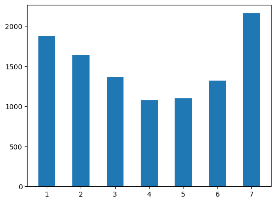
Sprouse et al. also provide by-subject \(z\)-scores, which are the quantities they use as dependent variables in their analyses because they are believed to “[eliminate] certain kinds of scale biases between participants” (Sprouse et al. 2016, 325). These scores are derived by mapping ordinal scale ratings \(r_i\) to \(\frac{r_i - \text{mean}\left(\mathbf{r}_{\text{subj}(i)}\right)}{\text{sd}\left(\mathbf{r}_{\text{subj}(i)}\right)}\), where \(\mathbf{r}_s \equiv \left\{r_j \mid s = \text{subj}(j)\right\}\). We can recompute these values and see that they have high correlation with those that Sprouse et al. compute–presumably differing only up to floating point error.
from numpy import round, corrcoef
from pandas import Series
def zscore(responses: Series) -> Series:
"""z-score responses
Parameters
----------
responses
The responses to z-score
Returns
-------
zscores
The z-scored responses
"""
return (responses - responses.mean()) / responses.std()
zscores_exp1 = data_exp1.groupby("subject").judgment.transform(zscore)
corr = round(corrcoef(data_exp1.zscores, zscores_exp1)[1,0], 3)
ax = plt.subplot()
ax.scatter(data_exp1.zscores, zscores_exp1)
_ = ax.annotate(
f"r = {corr}",
xy=(2.3, -2.1), xycoords='data',
horizontalalignment='right', verticalalignment='top',
fontsize=20
)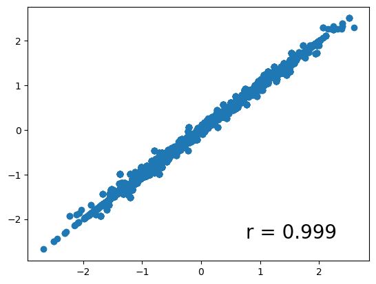
We will not be using these \(z\)-scores. Instead, we will the raw ordinal responses. This approach will be taken throughout the course on principled grounds: any preprocessing of a dependent variable necessarily introduces potentially important changes in the structure of that variable that can have downstream effects on statistical inference.
The Ordinal Logit Model
To model ordinal responses, we will use an ordered logit model. This model is parameterized by a real-valued \(\mu_n\)–which, for us, corresponds to a “true” acceptability that we observe only indirectly via the noisy ordinal rating \(Y_n\)–and \(K \equiv r_\text{max} - r_\text{min}\) cutpoints \(\mathbf{c}\), where \(r_\text{max}\) is the highest rating–7 in the Sprouse et al. data–and \(r_\text{min}\) is the lowest–1 in the Sprouse et al. data. Let’s assume that \(c_{r_\text{min}} \equiv 0\) and that:1
\[C_{r+1} - C_r \sim \text{Gamma}(2, 1)\]
# uses the k, theta (scale) parameterization
cutpoint_distance_dist = gamma(2.0, scale=1.)
fig, ax = plt.subplots()
distance = mgrid[0:10:0.01]
density = cutpoint_distance_dist.pdf(distance)
ax.plot(distance, density)
ax.set_title(r"PDF of the cutpoint distance prior distribution")
ax.set_xlabel(r"Distance")
_ = ax.set_ylabel("Density")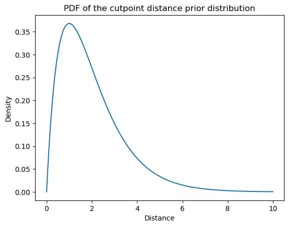
from numpy import sort
from numpy.random import seed
from scipy.stats import gamma
seed(302984)
n_resp_levels = 7
jumps = cutpoint_distance_dist.rvs(n_resp_levels-1)
cutpoints = jumps.cumsum()
cutpoints -= cutpoints.min()
cutpointsarray([ 0. , 3.01509045, 5.3033194 , 8.44799298, 13.82188812,
14.96264086])These \(K=6\) cutpoints can be thought of as defining \(K+1 = 7\) bins \(\{(-\infty, c_{r_\text{min}}), (c_{r_\text{min}}, c_{r_\text{min} + 1}), \ldots, (c_{r_\text{max}-2}, c_{r_\text{max}-1}), (c_{r_\text{max}-1}, \infty)\}\) of contiguous real values.
def plot_cutpoints(ax, cutpoints: ndarray, ymin: float = 0, ymax: float = 1) -> None:
ax.axis(xmin=cutpoints[0] - 2, xmax=cutpoints[-1] + 2)
ax.vlines(cutpoints, ymin, ymax, colors="C1")
height = (ymax + ymin) / 2
for i, c_i in enumerate(cutpoints):
if i:
_ = ax.annotate(
i + 1,
xy=((c_i + cutpoints[i-1]) / 2, height), xycoords='data',
horizontalalignment='center', verticalalignment='top',
fontsize=20,
)
elif not i:
_ = ax.annotate(
i + 1,
xy=((c_i - 1), height), xycoords='data',
horizontalalignment='center', verticalalignment='top',
fontsize=20
)
_ = ax.annotate(
cutpoints.shape[0] + 1,
xy=((cutpoints[-1] + 1), height), xycoords='data',
horizontalalignment='center', verticalalignment='top',
fontsize=20
)
ax = plt.subplot()
plot_cutpoints(ax, cutpoints)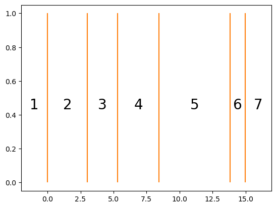
What makes this model an ordered logistic model is its assumptions about how randomness in the responses comes about: namely, that participants produce the ordinal value \(Y_n\) corresponding to the bin in which \(\mu_n + \epsilon_n\) falls, where \(\epsilon_n \sim \text{Logistic}(0, 1)\) is an error term distributed logistic. That is, the PDF of \(\epsilon_n\) is:
\[f(x) = \frac {e^{-x}}{\left(1+e^{-x}\right)^{2}}\]
from scipy.stats import logistic
fig, ax = plt.subplots()
logodds = mgrid[-5:5:0.01]
density = logistic(0, 1).pdf(mgrid[-5:5:0.01])
ax.plot(logodds, density)
ax.set_title(r"PDF of the standard logistic distribution")
ax.set_xlabel(r"Error")
_ = ax.set_ylabel("Density")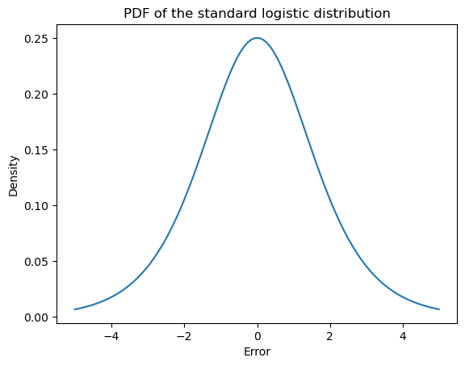
For instance, if we simulate multiple draws for a \(Y_n\) whose \(\mu_n\) is in the center of the bin for response 4…
seed(3029)
mu_n = (cutpoints[3] + cutpoints[2]) / 2
samples = mu_n + logistic(0, 1).rvs(10_000)
ax = plt.subplot()
plot_cutpoints(ax, cutpoints, 0, 0.25)
_ = ax.hist(samples, density=True, bins=20)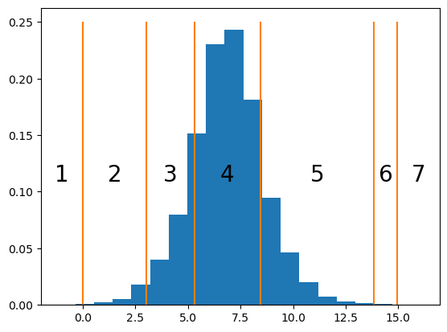
…we obtain a frequency distribution that peaks at 4, since \(\mu_n + \epsilon_n\) has most density within \((c_3, c_4)\), but where there are a fair numberof 3s and 5s, since those value have a fair amount of density.
responses = (samples[:,None] > cutpoints[None,:]).sum(axis=1) + 1
ax = plt.subplot()
_ = ax.hist(responses, bins=arange(1, 9), rwidth=0.5, align="left", density=True)
ax.set_title(r"Relative frequency of response in simulation")
ax.set_xlabel(r"Response")
_ = ax.set_ylabel("Relative Frequency")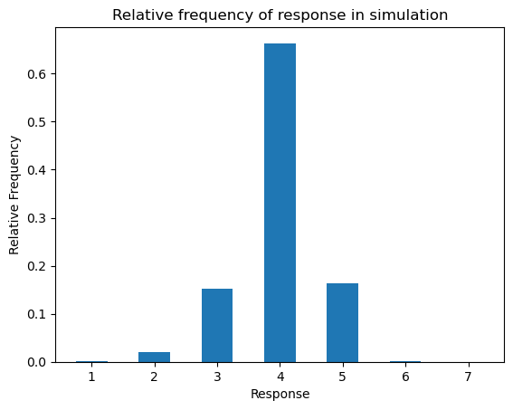
We will express that \(Y_n\) is distributed ordered logistic with:
\[ \begin{align*} Y_n &\sim \text{OrderedLogistic}(\mu_n, \mathbf{c})\\ \end{align*} \]
The way of thinking about \(Y_n\) described above effectively defines the PMF in terms of an expectation of \(\epsilon_n\)–which, remember, is a random variable. To make things a bit simpler, let’s assume we’re working with the extended reals, so we can say that \(c_{r_\text{min}-1} = -\infty\) and that \(c_{r_\text{max}} = +\infty\). Then, for \(r \in \{r_\text{min}, \ldots, r_\text{max}\}\):
\[\begin{align*} \mathbb{P}(Y_n=r\mid\mu_n, \mathbf{c}) &= \int_\mathbb{R} f(e)\mathbb{P}(Y_n=r\mid\mu_n, \mathbf{c},e) \,\mathrm{d}e\\ &= \int_\mathbb{R} f(e)\mathbb{P}\left(\mu_n+e \in (c_{r-1}, c_r)\right)\,\mathrm{d}e\\ &= \int_\mathbb{R} f(e)\mathbb{P}\left(e \in (c_{r-1} - \mu_n, c_r - \mu_n)\right)\\ &= \mathbb{E}\left[\mathbb{P}\left(\epsilon_n \in (c_{r-1} - \mu_n, c_r - \mu_n)\right)\right]\\ \end{align*}\]
This expression looks a bit hairy, but it turns out that we can express the PMF of \(Y_n\) analytically. To do this, we first need to note that, for a fixed \(e\):
\[\begin{align*} \mathbb{P}\left(e \in (c_{r-1} - \mu_n, c_r - \mu_n)\right) &= F(c_r - \mu_n) - F(c_{r-1} - \mu_n)\\ &= \text{logit}^{-1}(c_r - \mu_n) - \text{logit}^{-1}(c_{r-1} - \mu_n) \end{align*}\]
where \(F(x) = \text{logit}^{-1}(x) = \frac{1}{1 + \exp(-x)}\) is the CDF of the standard logistic distribution.
This function is also often called the inverse logit, logistic, or expit function. It can be viewed as mapping a log-odds to a probability. You may be familiar with it in the context of logistic regression, where we model the conditional expectation \(\text{logit}\;\mathbb{E}[Y \mid \mathbb{X}]\) of a Bernoulli random variable \(Y\)–e.g. a variable indicating whether a sentence is acceptable or unacceptable–given some predictors \(\mathbf{X}\)–e.g. dependency, island, structure, and distance from Sprouse et al.’s dataset.
from numpy import mgrid
from scipy.special import expit
fig, ax = plt.subplots()
logodds = mgrid[-5:5:0.01]
probability = expit(mgrid[-5:5:0.01])
ax.plot(logodds, probability)
ax.set_title(r"The logistic function $\frac{1}{1+\exp(-x)}$")
ax.set_xlabel(r"Log-odds $\log\frac{p}{1-p}$")
_ = ax.set_ylabel("Probability")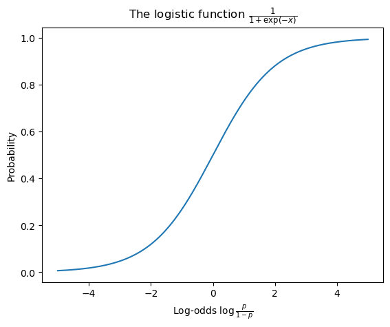
Thus, \(\mathbb{E}\left[\mathbb{P}\left(\epsilon_n \in (c_{r-1} - \mu_n, c_r - \mu_n)\right)\right]\) is actually the expected value of a constant \(\text{logit}^{-1}(c_r - \mu_n) - \text{logit}^{-1}(c_{r-1} - \mu_n)\) (reltive to \(\epsilon_n\)), which means that, for \(r \in \{r_\text{min}, \ldots, r_\text{max}\}\):
\[\mathbb{P}(Y_n=r\mid\mu_n, \mathbf{c}) = \text{logit}^{-1}(c_r - \mu_n) - \text{logit}^{-1}(c_{r-1} - \mu_n)\]
More explicitly, the PMF of \(Y_n\) is:
\[\mathbb{P}(Y_n = r \mid \mu_n, \mathbf{c}) = \begin{cases} \text{logit}^{-1}(c_r - \mu_n) & \text{if } r = r_\text{min}\\ \text{logit}^{-1}(c_r - \mu_n) - \text{logit}^{-1}(c_{r-1} - \mu_n) & \text{if } r_\text{min} < r < r_\text{max}\\ 1 - \text{logit}^{-1}(c_{r-1} - \mu_n) & \text{if } r = r_\text{max}\\ 0 & \text{otherwise}\\ \end{cases}\]
We commonly compute this by first computing the CDF and then taking the cumulative difference.
\[\mathbb{P}(y \leq r \mid \mu_n, \mathbf{c}) = \begin{cases} 0 & \text{if } r < r_\text{min}\\ \text{logit}^{-1}(c_r - \mu_n) & \text{if } r < r_\text{max}\\ 1 & \text{if } r \geq r_\text{max}\\ \end{cases}\]
from numpy import concatenate, ones, zeros, arange
def ordinal_pmf(mu: ndarray, cutpoints: ndarray):
n, = mu.shape
cdf = expit(cutpoints[None,:] - mu[:,None])
return concatenate([cdf, ones([n, 1])], axis=1) -\
concatenate([zeros([n, 1]), cdf], axis=1)If we compute the PMF for the value of \(\mu_n\) we simulated against above, we get something very close to the relative frequency distribution we observed before.
ax = plt.subplot()
ax.bar(arange(1, 8), ordinal_pmf(mu_n*ones(1), cutpoints)[0], 0.5)
ax.set_title(r"Probability mass function of ordinal logistic")
ax.set_xlabel(r"Response")
_ = ax.set_ylabel("Probability")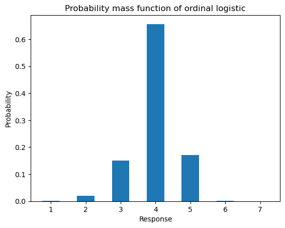
If we sweep the value of \(\mu_n\) relative to the set of cutpoints we sampled above, then plot the resulting PMF, the ordinal constraints on the distribution become apparent. Also notice that for 6, which has a very small bin relative to the other responses, no setting of \(\mu_n\) gives it a very high probability. Thus, the ordinal logistic model allows us to capture preference or dispreference for a particular response level by manipulating the bin size associated with that level.
pmfs = ordinal_pmf(arange(-1, 20), cutpoints)
fix, ax = plt.subplots(figsize=(6, 8))
img = ax.imshow(pmfs)
ax.set_xlabel("Rating")
ax.set_ylabel("Value")
img.set_cmap('binary')
_ = fig.colorbar(img, label="Probability")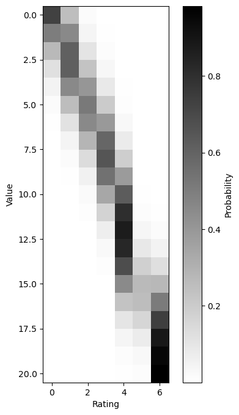
Fitting a simple ordinal logit model
This parameterization is implemented using the ordered_logistic distribution in STAN.
To start, we’ll define a simple intercept only model for the Sprouse et al.’s data in STAN. This model
from pygments import highlight
from pygments.formatters import HtmlFormatter
from pygments.lexers.modeling import StanLexer
from IPython.display import HTML, display
model_dir = "models/"
intercept_only_model_path = os.path.join(
model_dir, "intercept-only-model/intercept-only-model.stan"
)
with open(intercept_only_model_path, "r") as f:
display(HTML(highlight(f.read(), StanLexer(), HtmlFormatter())))data {
int<lower=0> N_resp; // number of responses
int<lower=2> N_resp_levels; // number of possible likert scale acceptability judgment responses
int<lower=1,upper=N_resp_levels> resp[N_resp]; // likert scale acceptability judgment responses
}
parameters {
real mu; // the grand average
ordered[N_resp_levels-1] cutpoints; // cutpoints
}
model {
// sample the cutpoints
cutpoints ~ normal(0, 1);
// sample the responses
for (n in 1:N_resp)
resp[n] ~ ordered_logistic(mu, cutpoints);
}
generated quantities {
real log_lik[N_resp];
for (n in 1:N_resp)
log_lik[n] = ordered_logistic_lpmf(resp[n] | mu, cutpoints);
}
To fit this model
def construct_intercept_only_model_data(data: pd.DataFrame) -> dict:
return {
"N_resp": data.shape[0],
"N_resp_levels": 7,
"resp": data.judgment.astype(int).values
}import arviz
from arviz import InferenceData
from cmdstanpy import CmdStanModel
def fit_intercept_only_model(data: pd.DataFrame) -> InferenceData:
model = CmdStanModel(stan_file=intercept_only_model_path)
model_data = construct_intercept_only_model_data(data)
model_fit = model.sample(data=model_data, show_progress=True)
return arviz.from_cmdstanpy(model_fit)intercept_only_model_fit = fit_intercept_only_model(data_exp1)20:57:55 - cmdstanpy - INFO - CmdStan start processing
21:00:31 - cmdstanpy - INFO - CmdStan done processing.
21:00:31 - cmdstanpy - WARNING - Non-fatal error during sampling:
Exception: ordered_logistic: Cut-points is not a valid ordered vector. The element at 2 is -1457.41, but should be greater than the previous element, -1457.41 (in '/home/jovyan/work/island-effects/models/intercept-only-model/intercept-only-model.stan', line 18, column 4 to column 46)
Exception: ordered_logistic: Cut-points is not a valid ordered vector. The element at 2 is -1459.58, but should be greater than the previous element, -1459.58 (in '/home/jovyan/work/island-effects/models/intercept-only-model/intercept-only-model.stan', line 18, column 4 to column 46)
Exception: ordered_logistic: Cut-points is not a valid ordered vector. The element at 2 is -363.072, but should be greater than the previous element, -363.072 (in '/home/jovyan/work/island-effects/models/intercept-only-model/intercept-only-model.stan', line 18, column 4 to column 46)
Exception: ordered_logistic: Cut-points is not a valid ordered vector. The element at 2 is -89.4407, but should be greater than the previous element, -89.4407 (in '/home/jovyan/work/island-effects/models/intercept-only-model/intercept-only-model.stan', line 18, column 4 to column 46)
Exception: ordered_logistic: Cut-points is not a valid ordered vector. The element at 3 is inf, but should be greater than the previous element, inf (in '/home/jovyan/work/island-effects/models/intercept-only-model/intercept-only-model.stan', line 18, column 4 to column 46)
Exception: ordered_logistic: Cut-points is not a valid ordered vector. The element at 3 is inf, but should be greater than the previous element, inf (in '/home/jovyan/work/island-effects/models/intercept-only-model/intercept-only-model.stan', line 18, column 4 to column 46)
Exception: ordered_logistic: Cut-points is not a valid ordered vector. The element at 3 is 4.85481e+59, but should be greater than the previous element, 4.85481e+59 (in '/home/jovyan/work/island-effects/models/intercept-only-model/intercept-only-model.stan', line 18, column 4 to column 46)
Exception: ordered_logistic: Cut-points is not a valid ordered vector. The element at 3 is 1.78927e+60, but should be greater than the previous element, 1.78927e+60 (in '/home/jovyan/work/island-effects/models/intercept-only-model/intercept-only-model.stan', line 18, column 4 to column 46)
Exception: ordered_logistic: Cut-points is not a valid ordered vector. The element at 3 is 6.34637e+14, but should be greater than the previous element, 6.34637e+14 (in '/home/jovyan/work/island-effects/models/intercept-only-model/intercept-only-model.stan', line 18, column 4 to column 46)
Exception: ordered_logistic: Cut-points is not a valid ordered vector. The element at 3 is 869.932, but should be greater than the previous element, 869.932 (in '/home/jovyan/work/island-effects/models/intercept-only-model/intercept-only-model.stan', line 18, column 4 to column 46)
Exception: ordered_logistic: Cut-points is not a valid ordered vector. The element at 3 is inf, but should be greater than the previous element, inf (in '/home/jovyan/work/island-effects/models/intercept-only-model/intercept-only-model.stan', line 18, column 4 to column 46)
Exception: ordered_logistic: Cut-points is not a valid ordered vector. The element at 3 is inf, but should be greater than the previous element, inf (in '/home/jovyan/work/island-effects/models/intercept-only-model/intercept-only-model.stan', line 18, column 4 to column 46)
Exception: ordered_logistic: Cut-points is not a valid ordered vector. The element at 2 is -1458.73, but should be greater than the previous element, -1458.73 (in '/home/jovyan/work/island-effects/models/intercept-only-model/intercept-only-model.stan', line 18, column 4 to column 46)
Exception: ordered_logistic: Cut-points is not a valid ordered vector. The element at 2 is -1459.01, but should be greater than the previous element, -1459.01 (in '/home/jovyan/work/island-effects/models/intercept-only-model/intercept-only-model.stan', line 18, column 4 to column 46)
Exception: ordered_logistic: Cut-points is not a valid ordered vector. The element at 2 is -364.163, but should be greater than the previous element, -364.163 (in '/home/jovyan/work/island-effects/models/intercept-only-model/intercept-only-model.stan', line 18, column 4 to column 46)
Exception: ordered_logistic: Cut-points is not a valid ordered vector. The element at 2 is -90.7441, but should be greater than the previous element, -90.7441 (in '/home/jovyan/work/island-effects/models/intercept-only-model/intercept-only-model.stan', line 18, column 4 to column 46)
Exception: ordered_logistic: Cut-points is not a valid ordered vector. The element at 5 is -21.4387, but should be greater than the previous element, -21.4387 (in '/home/jovyan/work/island-effects/models/intercept-only-model/intercept-only-model.stan', line 18, column 4 to column 46)
Exception: ordered_logistic: Cut-points is not a valid ordered vector. The element at 3 is inf, but should be greater than the previous element, inf (in '/home/jovyan/work/island-effects/models/intercept-only-model/intercept-only-model.stan', line 18, column 4 to column 46)
Exception: ordered_logistic: Cut-points is not a valid ordered vector. The element at 3 is 5.87092e+43, but should be greater than the previous element, 5.87092e+43 (in '/home/jovyan/work/island-effects/models/intercept-only-model/intercept-only-model.stan', line 18, column 4 to column 46)
Exception: ordered_logistic: Cut-points is not a valid ordered vector. The element at 2 is -951.042, but should be greater than the previous element, -951.042 (in '/home/jovyan/work/island-effects/models/intercept-only-model/intercept-only-model.stan', line 18, column 4 to column 46)
Exception: ordered_logistic: Cut-points is not a valid ordered vector. The element at 2 is -952.096, but should be greater than the previous element, -952.096 (in '/home/jovyan/work/island-effects/models/intercept-only-model/intercept-only-model.stan', line 18, column 4 to column 46)
Exception: ordered_logistic: Cut-points is not a valid ordered vector. The element at 4 is -238.063, but should be greater than the previous element, -238.063 (in '/home/jovyan/work/island-effects/models/intercept-only-model/intercept-only-model.stan', line 18, column 4 to column 46)
Exception: ordered_logistic: Cut-points is not a valid ordered vector. The element at 4 is -59.2979, but should be greater than the previous element, -59.2979 (in '/home/jovyan/work/island-effects/models/intercept-only-model/intercept-only-model.stan', line 18, column 4 to column 46)
Exception: ordered_logistic: Cut-points is not a valid ordered vector. The element at 4 is -14.5798, but should be greater than the previous element, -14.5798 (in '/home/jovyan/work/island-effects/models/intercept-only-model/intercept-only-model.stan', line 18, column 4 to column 46)
Exception: ordered_logistic: Cut-points is not a valid ordered vector. The element at 3 is inf, but should be greater than the previous element, inf (in '/home/jovyan/work/island-effects/models/intercept-only-model/intercept-only-model.stan', line 18, column 4 to column 46)
Exception: ordered_logistic: Cut-points is not a valid ordered vector. The element at 4 is 4.63937e+57, but should be greater than the previous element, 4.63937e+57 (in '/home/jovyan/work/island-effects/models/intercept-only-model/intercept-only-model.stan', line 18, column 4 to column 46)
Exception: ordered_logistic: Cut-points is not a valid ordered vector. The element at 4 is -38.2948, but should be greater than the previous element, -38.2948 (in '/home/jovyan/work/island-effects/models/intercept-only-model/intercept-only-model.stan', line 18, column 4 to column 46)
Consider re-running with show_console=True if the above output is unclear! import arviz
_ = arviz.plot_forest(
intercept_only_model_fit,
var_names=["mu", "cutpoints"],
combined=True,
figsize=(11.5, 3),
)
import cmdstanpy
from abc import ABC, abstractmethod
from typing import Optional
from cmdstanpy import CmdStanModel
class StanModel(ABC):
stan_file: str
def __init__(self):
self.model = CmdStanModel(stan_file=self.stan_file)
@abstractmethod
def construct_model_data(self, data: pd.DataFrame):
raise NotImplementedError
@abstractmethod
def _validate_data(self):
raise NotImplementedError
def fit(
self,
data: pd.DataFrame,
save_dir: Optional[str] = None,
verbose: bool = True,
show_progress: bool = True
) -> InferenceData:
self.model_data = self.construct_model_data(data)
self._validate_data()
if verbose:
print("Fitting model...")
self.raw_model_fit = self.model.sample(
data=self.model_data,
show_progress=show_progress
)
if save_dir is not None:
if verbose:
print("Saving model...")
self.save(save_dir)
if verbose:
print("Saving model...")
return self
def pointwise_log_likelihoods(self, data: Optional[pd.DataFrame] = None, **kwargs) -> InferenceData:
if data is None:
model_data = self.model_data
else:
model_data = self.construct_model_data(data, **kwargs)
log_likelihoods = self.model.generate_quantities(
data=model_data,
previous_fit=self.raw_model_fit
)
return arviz.from_cmdstanpy(log_likelihoods)
@property
def model_fit(self):
return arviz.from_cmdstanpy(self.raw_model_fit)
def save(self, save_dir: str = "."):
self.raw_model_fit.save_csvfiles(save_dir)
@classmethod
def from_csv(cls, path: str, **kwargs):
model = cls(**kwargs)
model.raw_model_fit = cmdstanpy.from_csv(path)from dataclasses import dataclass
from numpy import ndarray
@dataclass
class InterceptOnlyData:
N_resp: int # number of responses
N_resp_levels: int # number of possible likert scale acceptability judgment responses
resp: ndarray # likert scale acceptability judgment responses
class InterceptOnlyModel(StanModel):
stan_file = intercept_only_model_path
data_class = InterceptOnlyData
def construct_model_data(self, data: pd.DataFrame):
model_data = {
"N_resp": data.shape[0],
"N_resp_levels": 7,
"resp": data.judgment.astype(int).values
}
return model_data
def _validate_data(self):
self.data_class(**self.model_data)intercept_only_model = InterceptOnlyModel().fit(data_exp1)
intercept_only_model.model_fit21:00:34 - cmdstanpy - INFO - CmdStan start processing
21:03:16 - cmdstanpy - INFO - CmdStan done processing.
21:03:16 - cmdstanpy - WARNING - Non-fatal error during sampling:
Exception: ordered_logistic: Cut-points is not a valid ordered vector. The element at 2 is -1019.94, but should be greater than the previous element, -1019.94 (in '/home/jovyan/work/island-effects/models/intercept-only-model/intercept-only-model.stan', line 18, column 4 to column 46)
Exception: ordered_logistic: Cut-points is not a valid ordered vector. The element at 2 is -1018.69, but should be greater than the previous element, -1018.69 (in '/home/jovyan/work/island-effects/models/intercept-only-model/intercept-only-model.stan', line 18, column 4 to column 46)
Exception: ordered_logistic: Cut-points is not a valid ordered vector. The element at 2 is -254.231, but should be greater than the previous element, -254.231 (in '/home/jovyan/work/island-effects/models/intercept-only-model/intercept-only-model.stan', line 18, column 4 to column 46)
Exception: ordered_logistic: Cut-points is not a valid ordered vector. The element at 2 is -63.6037, but should be greater than the previous element, -63.6037 (in '/home/jovyan/work/island-effects/models/intercept-only-model/intercept-only-model.stan', line 18, column 4 to column 46)
Exception: ordered_logistic: Cut-points is not a valid ordered vector. The element at 2 is -16.0396, but should be greater than the previous element, -16.0396 (in '/home/jovyan/work/island-effects/models/intercept-only-model/intercept-only-model.stan', line 18, column 4 to column 46)
Exception: ordered_logistic: Cut-points is not a valid ordered vector. The element at 2 is -17310.9, but should be greater than the previous element, -17310.9 (in '/home/jovyan/work/island-effects/models/intercept-only-model/intercept-only-model.stan', line 18, column 4 to column 46)
Exception: ordered_logistic: Cut-points is not a valid ordered vector. The element at 2 is -493.297, but should be greater than the previous element, -493.297 (in '/home/jovyan/work/island-effects/models/intercept-only-model/intercept-only-model.stan', line 18, column 4 to column 46)
Exception: ordered_logistic: Cut-points is not a valid ordered vector. The element at 2 is -1515.52, but should be greater than the previous element, -1515.52 (in '/home/jovyan/work/island-effects/models/intercept-only-model/intercept-only-model.stan', line 18, column 4 to column 46)
Exception: ordered_logistic: Cut-points is not a valid ordered vector. The element at 2 is -1516.05, but should be greater than the previous element, -1516.05 (in '/home/jovyan/work/island-effects/models/intercept-only-model/intercept-only-model.stan', line 18, column 4 to column 46)
Exception: ordered_logistic: Cut-points is not a valid ordered vector. The element at 2 is -377.359, but should be greater than the previous element, -377.359 (in '/home/jovyan/work/island-effects/models/intercept-only-model/intercept-only-model.stan', line 18, column 4 to column 46)
Exception: ordered_logistic: Cut-points is not a valid ordered vector. The element at 2 is -92.73, but should be greater than the previous element, -92.73 (in '/home/jovyan/work/island-effects/models/intercept-only-model/intercept-only-model.stan', line 18, column 4 to column 46)
Exception: ordered_logistic: Cut-points is not a valid ordered vector. The element at 2 is -21.6314, but should be greater than the previous element, -21.6314 (in '/home/jovyan/work/island-effects/models/intercept-only-model/intercept-only-model.stan', line 18, column 4 to column 46)
Exception: ordered_logistic: Cut-points is not a valid ordered vector. The element at 3 is inf, but should be greater than the previous element, inf (in '/home/jovyan/work/island-effects/models/intercept-only-model/intercept-only-model.stan', line 18, column 4 to column 46)
Exception: ordered_logistic: Cut-points is not a valid ordered vector. The element at 3 is 6.75637e+38, but should be greater than the previous element, 6.75637e+38 (in '/home/jovyan/work/island-effects/models/intercept-only-model/intercept-only-model.stan', line 18, column 4 to column 46)
Exception: ordered_logistic: Cut-points is not a valid ordered vector. The element at 3 is -764.197, but should be greater than the previous element, -764.197 (in '/home/jovyan/work/island-effects/models/intercept-only-model/intercept-only-model.stan', line 18, column 4 to column 46)
Exception: ordered_logistic: Cut-points is not a valid ordered vector. The element at 3 is -765.119, but should be greater than the previous element, -765.119 (in '/home/jovyan/work/island-effects/models/intercept-only-model/intercept-only-model.stan', line 18, column 4 to column 46)
Exception: ordered_logistic: Cut-points is not a valid ordered vector. The element at 3 is -191.238, but should be greater than the previous element, -191.238 (in '/home/jovyan/work/island-effects/models/intercept-only-model/intercept-only-model.stan', line 18, column 4 to column 46)
Exception: ordered_logistic: Cut-points is not a valid ordered vector. The element at 3 is -47.3969, but should be greater than the previous element, -47.3969 (in '/home/jovyan/work/island-effects/models/intercept-only-model/intercept-only-model.stan', line 18, column 4 to column 46)
Exception: ordered_logistic: Cut-points is not a valid ordered vector. The element at 5 is -11.269, but should be greater than the previous element, -11.269 (in '/home/jovyan/work/island-effects/models/intercept-only-model/intercept-only-model.stan', line 18, column 4 to column 46)
Exception: ordered_logistic: Cut-points is not a valid ordered vector. The element at 3 is inf, but should be greater than the previous element, inf (in '/home/jovyan/work/island-effects/models/intercept-only-model/intercept-only-model.stan', line 18, column 4 to column 46)
Exception: ordered_logistic: Cut-points is not a valid ordered vector. The element at 3 is inf, but should be greater than the previous element, inf (in '/home/jovyan/work/island-effects/models/intercept-only-model/intercept-only-model.stan', line 18, column 4 to column 46)
Exception: ordered_logistic: Cut-points is not a valid ordered vector. The element at 2 is -855.67, but should be greater than the previous element, -855.67 (in '/home/jovyan/work/island-effects/models/intercept-only-model/intercept-only-model.stan', line 18, column 4 to column 46)
Exception: ordered_logistic: Cut-points is not a valid ordered vector. The element at 2 is -858.008, but should be greater than the previous element, -858.008 (in '/home/jovyan/work/island-effects/models/intercept-only-model/intercept-only-model.stan', line 18, column 4 to column 46)
Exception: ordered_logistic: Cut-points is not a valid ordered vector. The element at 2 is -215.271, but should be greater than the previous element, -215.271 (in '/home/jovyan/work/island-effects/models/intercept-only-model/intercept-only-model.stan', line 18, column 4 to column 46)
Exception: ordered_logistic: Cut-points is not a valid ordered vector. The element at 3 is -55.3715, but should be greater than the previous element, -55.3715 (in '/home/jovyan/work/island-effects/models/intercept-only-model/intercept-only-model.stan', line 18, column 4 to column 46)
Exception: ordered_logistic: Cut-points is not a valid ordered vector. The element at 3 is -15.0373, but should be greater than the previous element, -15.0373 (in '/home/jovyan/work/island-effects/models/intercept-only-model/intercept-only-model.stan', line 18, column 4 to column 46)
Exception: ordered_logistic: Cut-points is not a valid ordered vector. The element at 2 is -96115.3, but should be greater than the previous element, -96115.3 (in '/home/jovyan/work/island-effects/models/intercept-only-model/intercept-only-model.stan', line 18, column 4 to column 46)
Exception: ordered_logistic: Cut-points is not a valid ordered vector. The element at 2 is -2745.36, but should be greater than the previous element, -2745.36 (in '/home/jovyan/work/island-effects/models/intercept-only-model/intercept-only-model.stan', line 18, column 4 to column 46)
Exception: ordered_logistic: Cut-points is not a valid ordered vector. The element at 3 is -28.5073, but should be greater than the previous element, -28.5073 (in '/home/jovyan/work/island-effects/models/intercept-only-model/intercept-only-model.stan', line 18, column 4 to column 46)
Consider re-running with show_console=True if the above output is unclear!Fitting model...
Saving model...arviz.InferenceData
-
<xarray.Dataset> Dimensions: (chain: 4, draw: 1000, cutpoints_dim_0: 6) Coordinates: * chain (chain) int64 0 1 2 3 * draw (draw) int64 0 1 2 3 4 5 6 ... 993 994 995 996 997 998 999 * cutpoints_dim_0 (cutpoints_dim_0) int64 0 1 2 3 4 5 Data variables: mu (chain, draw) float64 -0.2459 0.2046 ... 0.5889 0.4749 cutpoints (chain, draw, cutpoints_dim_0) float64 -2.165 ... 1.992 Attributes: created_at: 2023-05-09T21:03:18.966223 arviz_version: 0.15.1 inference_library: cmdstanpy inference_library_version: 1.1.0 -
<xarray.Dataset> Dimensions: (chain: 4, draw: 1000, log_lik_dim_0: 3515) Coordinates: * chain (chain) int64 0 1 2 3 * draw (draw) int64 0 1 2 3 4 5 6 7 ... 993 994 995 996 997 998 999 * log_lik_dim_0 (log_lik_dim_0) int64 0 1 2 3 4 ... 3510 3511 3512 3513 3514 Data variables: log_lik (chain, draw, log_lik_dim_0) float64 -2.056 -2.096 ... -1.865 Attributes: created_at: 2023-05-09T21:03:19.014955 arviz_version: 0.15.1 inference_library: cmdstanpy inference_library_version: 1.1.0 -
<xarray.Dataset> Dimensions: (chain: 4, draw: 1000) Coordinates: * chain (chain) int64 0 1 2 3 * draw (draw) int64 0 1 2 3 4 5 6 ... 993 994 995 996 997 998 999 Data variables: lp (chain, draw) float64 -6.821e+03 -6.816e+03 ... -6.819e+03 acceptance_rate (chain, draw) float64 0.9857 0.9874 ... 0.7836 0.9996 step_size (chain, draw) float64 0.05329 0.05329 ... 0.04694 0.04694 tree_depth (chain, draw) int64 6 6 6 6 6 6 6 6 6 ... 6 6 6 6 6 6 6 6 7 n_steps (chain, draw) int64 63 63 63 63 63 63 ... 127 63 63 63 127 diverging (chain, draw) bool False False False ... False False False energy (chain, draw) float64 6.827e+03 6.824e+03 ... 6.823e+03 Attributes: created_at: 2023-05-09T21:03:18.968931 arviz_version: 0.15.1 inference_library: cmdstanpy inference_library_version: 1.1.0
_ = arviz.plot_forest(
intercept_only_model.model_fit,
var_names=["mu", "cutpoints"],
combined=True,
figsize=(11.5, 3),
)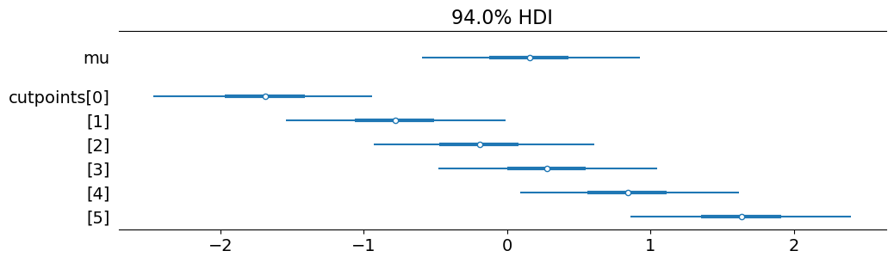
item_random_effects_model_path = os.path.join(
model_dir, "item-random-effects-model/item-random-effects-model.stan"
)
with open(item_random_effects_model_path, "r") as f:
display(HTML(highlight(f.read(), StanLexer(), HtmlFormatter())))data {
int<lower=0> N_resp; // number of responses
int<lower=0> N_item; // number of items
int<lower=2> N_resp_levels; // number of possible likert scale acceptability judgment responses
int<lower=1,upper=N_item> item[N_resp]; // item corresponding to response n
int<lower=1,upper=N_resp_levels> resp[N_resp]; // likert scale acceptability judgment responses
int<lower=0,upper=1> marginalize_raneffs; // whether to marginalize out the random effects in computing the likelihood
}
parameters {
real beta; // the grand average
real<lower=0> item_intercept_var; // the item random intercept variance
vector[N_item] item_intercept; // the item random intercepts
ordered[N_resp_levels-1] cutpoints; // cutpoints
}
transformed parameters {
real mu[N_resp];
for (n in 1:N_resp)
mu[n] = beta + item_intercept[item[n]];
}
model {
// sample the item intercepts
item_intercept ~ normal(0, item_intercept_var);
// sample the cutpoints
cutpoints ~ normal(0, 1);
// sample the responses
for (n in 1:N_resp)
resp[n] ~ ordered_logistic(mu[n], cutpoints);
}
generated quantities {
real log_lik[N_resp];
if (marginalize_raneffs == 0) {
for (n in 1:N_resp) {
log_lik[n] = ordered_logistic_lpmf(resp[n] | mu[n], cutpoints);
}
} else {
real item_intercept_simulated[N_item];
real mu_simulated[N_item];
real log_lik_resp_level_by_item[N_resp_levels,N_item];
real log_lik_resp_level[N_resp_levels];
for (i in 1:N_item) {
item_intercept_simulated[i] = normal_rng(0, item_intercept_var);
mu_simulated[i] = beta + item_intercept_simulated[i];
for (l in 1:N_resp_levels) {
log_lik_resp_level_by_item[l,i] = ordered_logistic_lpmf(l | mu_simulated[i], cutpoints);
}
}
for (l in 1:N_resp_levels) {
log_lik_resp_level[l] = log_sum_exp(log_lik_resp_level_by_item[l]) - log(N_item);
}
for (n in 1:N_resp) {
log_lik[n] = log_lik_resp_level[resp[n]];
}
}
}
@dataclass
class ItemRandomEffectsData(InterceptOnlyData):
N_item: int # number of items
item: ndarray # item corresponding to response n
marginalize_raneffs: int # whether to marginalize out the random effects in computing the likelihood def hash_series(series: pd.Series, indexation: int=1) -> tuple[ndarray, ndarray]:
"""Hash a series to numeric codes
Parameters
----------
column
The series to hash
index
The starting index (defaults to 1)
"""
# enforce 0- or 1-indexation
if indexation not in [0, 1]:
raise ValueError("Must choose either 0- or 1-indexation.")
# convert the series to a category
category_series = series.astype("category")
# get the hash
hash_map = category_series.cat.categories.values
# map to one-indexed codes
hashed_series = (category_series.cat.codes + indexation).values
return hash_map, hashed_seriesclass ItemRandomEffectsModel(InterceptOnlyModel):
stan_file = item_random_effects_model_path
data_class = ItemRandomEffectsData
def construct_model_data(self, data: pd.DataFrame, marginalize_raneffs: bool = False):
model_data = super().construct_model_data(data)
self.item_hash_map, item_hashed = hash_series(data.item)
model_data.update({
"N_item": self.item_hash_map.shape[0],
"item": item_hashed,
"marginalize_raneffs": int(marginalize_raneffs)
})
return model_dataitem_random_effects_model = ItemRandomEffectsModel().fit(data_exp1)
item_random_effects_model.model_fit21:03:19 - cmdstanpy - INFO - compiling stan file /home/jovyan/work/island-effects/models/item-random-effects-model/item-random-effects-model.stan to exe file /home/jovyan/work/island-effects/models/item-random-effects-model/item-random-effects-model
21:03:30 - cmdstanpy - INFO - compiled model executable: /home/jovyan/work/island-effects/models/item-random-effects-model/item-random-effects-model
21:03:30 - cmdstanpy - WARNING - Stan compiler has produced 8 warnings:
21:03:30 - cmdstanpy - WARNING -
--- Translating Stan model to C++ code ---
bin/stanc --o=/home/jovyan/work/island-effects/models/item-random-effects-model/item-random-effects-model.hpp /home/jovyan/work/island-effects/models/item-random-effects-model/item-random-effects-model.stan
Warning in '/home/jovyan/work/island-effects/models/item-random-effects-model/item-random-effects-model.stan', line 5, column 2: Declaration
of arrays by placing brackets after a variable name is deprecated and
will be removed in Stan 2.33.0. Instead use the array keyword before the
type. This can be changed automatically using the auto-format flag to
stanc
Warning in '/home/jovyan/work/island-effects/models/item-random-effects-model/item-random-effects-model.stan', line 6, column 2: Declaration
of arrays by placing brackets after a variable name is deprecated and
will be removed in Stan 2.33.0. Instead use the array keyword before the
type. This can be changed automatically using the auto-format flag to
stanc
Warning in '/home/jovyan/work/island-effects/models/item-random-effects-model/item-random-effects-model.stan', line 16, column 2: Declaration
of arrays by placing brackets after a variable name is deprecated and
will be removed in Stan 2.33.0. Instead use the array keyword before the
type. This can be changed automatically using the auto-format flag to
stanc
Warning in '/home/jovyan/work/island-effects/models/item-random-effects-model/item-random-effects-model.stan', line 33, column 2: Declaration
of arrays by placing brackets after a variable name is deprecated and
will be removed in Stan 2.33.0. Instead use the array keyword before the
type. This can be changed automatically using the auto-format flag to
stanc
Warning in '/home/jovyan/work/island-effects/models/item-random-effects-model/item-random-effects-model.stan', line 40, column 4: Declaration
of arrays by placing brackets after a variable name is deprecated and
will be removed in Stan 2.33.0. Instead use the array keyword before the
type. This can be changed automatically using the auto-format flag to
stanc
Warning in '/home/jovyan/work/island-effects/models/item-random-effects-model/item-random-effects-model.stan', line 41, column 4: Declaration
of arrays by placing brackets after a variable name is deprecated and
will be removed in Stan 2.33.0. Instead use the array keyword before the
type. This can be changed automatically using the auto-format flag to
stanc
Warning in '/home/jovyan/work/island-effects/models/item-random-effects-model/item-random-effects-model.stan', line 42, column 4: Declaration
of arrays by placing brackets after a variable name is deprecated and
will be removed in Stan 2.33.0. Instead use the array keyword before the
type. This can be changed automatically using the auto-format flag to
stanc
Warning in '/home/jovyan/work/island-effects/models/item-random-effects-model/item-random-effects-model.stan', line 43, column 4: Declaration
of arrays by placing brackets after a variable name is deprecated and
will be removed in Stan 2.33.0. Instead use the array keyword before the
type. This can be changed automatically using the auto-format flag to
stanc
--- Compiling, linking C++ code ---
g++ -std=c++1y -pthread -D_REENTRANT -Wno-sign-compare -Wno-ignored-attributes -I stan/lib/stan_math/lib/tbb_2020.3/include -O3 -I src -I stan/src -I stan/lib/rapidjson_1.1.0/ -I lib/CLI11-1.9.1/ -I stan/lib/stan_math/ -I stan/lib/stan_math/lib/eigen_3.4.0 -I stan/lib/stan_math/lib/boost_1.78.0 -I stan/lib/stan_math/lib/sundials_6.1.1/include -I stan/lib/stan_math/lib/sundials_6.1.1/src/sundials -DBOOST_DISABLE_ASSERTS -c -Wno-ignored-attributes -x c++ -o /home/jovyan/work/island-effects/models/item-random-effects-model/item-random-effects-model.o /home/jovyan/work/island-effects/models/item-random-effects-model/item-random-effects-model.hpp
g++ -std=c++1y -pthread -D_REENTRANT -Wno-sign-compare -Wno-ignored-attributes -I stan/lib/stan_math/lib/tbb_2020.3/include -O3 -I src -I stan/src -I stan/lib/rapidjson_1.1.0/ -I lib/CLI11-1.9.1/ -I stan/lib/stan_math/ -I stan/lib/stan_math/lib/eigen_3.4.0 -I stan/lib/stan_math/lib/boost_1.78.0 -I stan/lib/stan_math/lib/sundials_6.1.1/include -I stan/lib/stan_math/lib/sundials_6.1.1/src/sundials -DBOOST_DISABLE_ASSERTS -Wl,-L,"/home/jovyan/.cmdstan/cmdstan-2.32.1/stan/lib/stan_math/lib/tbb" -Wl,-rpath,"/home/jovyan/.cmdstan/cmdstan-2.32.1/stan/lib/stan_math/lib/tbb" /home/jovyan/work/island-effects/models/item-random-effects-model/item-random-effects-model.o src/cmdstan/main.o -Wl,-L,"/home/jovyan/.cmdstan/cmdstan-2.32.1/stan/lib/stan_math/lib/tbb" -Wl,-rpath,"/home/jovyan/.cmdstan/cmdstan-2.32.1/stan/lib/stan_math/lib/tbb" stan/lib/stan_math/lib/sundials_6.1.1/lib/libsundials_nvecserial.a stan/lib/stan_math/lib/sundials_6.1.1/lib/libsundials_cvodes.a stan/lib/stan_math/lib/sundials_6.1.1/lib/libsundials_idas.a stan/lib/stan_math/lib/sundials_6.1.1/lib/libsundials_kinsol.a stan/lib/stan_math/lib/tbb/libtbb.so.2 -o /home/jovyan/work/island-effects/models/item-random-effects-model/item-random-effects-model
rm -f /home/jovyan/work/island-effects/models/item-random-effects-model/item-random-effects-model.o
21:03:30 - cmdstanpy - INFO - CmdStan start processing
21:06:46 - cmdstanpy - INFO - CmdStan done processing.
21:06:46 - cmdstanpy - WARNING - Non-fatal error during sampling:
Exception: ordered_logistic: Cut-points is not a valid ordered vector. The element at 2 is -977.814, but should be greater than the previous element, -977.814 (in '/home/jovyan/work/island-effects/models/item-random-effects-model/item-random-effects-model.stan', line 29, column 4 to column 49)
Exception: ordered_logistic: Cut-points is not a valid ordered vector. The element at 2 is -978.879, but should be greater than the previous element, -978.879 (in '/home/jovyan/work/island-effects/models/item-random-effects-model/item-random-effects-model.stan', line 29, column 4 to column 49)
Exception: ordered_logistic: Cut-points is not a valid ordered vector. The element at 2 is -244.304, but should be greater than the previous element, -244.304 (in '/home/jovyan/work/island-effects/models/item-random-effects-model/item-random-effects-model.stan', line 29, column 4 to column 49)
Exception: ordered_logistic: Cut-points is not a valid ordered vector. The element at 2 is -61.9748, but should be greater than the previous element, -61.9748 (in '/home/jovyan/work/island-effects/models/item-random-effects-model/item-random-effects-model.stan', line 29, column 4 to column 49)
Exception: ordered_logistic: Cut-points is not a valid ordered vector. The element at 4 is -15.5953, but should be greater than the previous element, -15.5953 (in '/home/jovyan/work/island-effects/models/item-random-effects-model/item-random-effects-model.stan', line 29, column 4 to column 49)
Exception: normal_lpdf: Scale parameter is 0, but must be positive! (in '/home/jovyan/work/island-effects/models/item-random-effects-model/item-random-effects-model.stan', line 22, column 2 to column 49)
Exception: ordered_logistic: Cut-points is not a valid ordered vector. The element at 3 is inf, but should be greater than the previous element, inf (in '/home/jovyan/work/island-effects/models/item-random-effects-model/item-random-effects-model.stan', line 29, column 4 to column 49)
Exception: ordered_logistic: Cut-points is not a valid ordered vector. The element at 2 is -209.813, but should be greater than the previous element, -209.813 (in '/home/jovyan/work/island-effects/models/item-random-effects-model/item-random-effects-model.stan', line 29, column 4 to column 49)
Exception: ordered_logistic: Cut-points is not a valid ordered vector. The element at 2 is -213.591, but should be greater than the previous element, -213.591 (in '/home/jovyan/work/island-effects/models/item-random-effects-model/item-random-effects-model.stan', line 29, column 4 to column 49)
Exception: ordered_logistic: Cut-points is not a valid ordered vector. The element at 2 is -53.6274, but should be greater than the previous element, -53.6274 (in '/home/jovyan/work/island-effects/models/item-random-effects-model/item-random-effects-model.stan', line 29, column 4 to column 49)
Exception: ordered_logistic: Cut-points is not a valid ordered vector. The element at 3 is -15.3235, but should be greater than the previous element, -15.3235 (in '/home/jovyan/work/island-effects/models/item-random-effects-model/item-random-effects-model.stan', line 29, column 4 to column 49)
Exception: normal_lpdf: Scale parameter is 0, but must be positive! (in '/home/jovyan/work/island-effects/models/item-random-effects-model/item-random-effects-model.stan', line 22, column 2 to column 49)
Exception: ordered_logistic: Cut-points is not a valid ordered vector. The element at 2 is -767.799, but should be greater than the previous element, -767.799 (in '/home/jovyan/work/island-effects/models/item-random-effects-model/item-random-effects-model.stan', line 29, column 4 to column 49)
Exception: ordered_logistic: Cut-points is not a valid ordered vector. The element at 2 is -936.113, but should be greater than the previous element, -936.113 (in '/home/jovyan/work/island-effects/models/item-random-effects-model/item-random-effects-model.stan', line 29, column 4 to column 49)
Exception: ordered_logistic: Cut-points is not a valid ordered vector. The element at 2 is -935.18, but should be greater than the previous element, -935.18 (in '/home/jovyan/work/island-effects/models/item-random-effects-model/item-random-effects-model.stan', line 29, column 4 to column 49)
Exception: ordered_logistic: Cut-points is not a valid ordered vector. The element at 2 is -233.675, but should be greater than the previous element, -233.675 (in '/home/jovyan/work/island-effects/models/item-random-effects-model/item-random-effects-model.stan', line 29, column 4 to column 49)
Exception: ordered_logistic: Cut-points is not a valid ordered vector. The element at 2 is -59.2255, but should be greater than the previous element, -59.2255 (in '/home/jovyan/work/island-effects/models/item-random-effects-model/item-random-effects-model.stan', line 29, column 4 to column 49)
Exception: normal_lpdf: Scale parameter is 0, but must be positive! (in '/home/jovyan/work/island-effects/models/item-random-effects-model/item-random-effects-model.stan', line 22, column 2 to column 49)
Exception: ordered_logistic: Cut-points is not a valid ordered vector. The element at 2 is -2295.98, but should be greater than the previous element, -2295.98 (in '/home/jovyan/work/island-effects/models/item-random-effects-model/item-random-effects-model.stan', line 29, column 4 to column 49)
Exception: ordered_logistic: Cut-points is not a valid ordered vector. The element at 2 is -983.514, but should be greater than the previous element, -983.514 (in '/home/jovyan/work/island-effects/models/item-random-effects-model/item-random-effects-model.stan', line 29, column 4 to column 49)
Exception: ordered_logistic: Cut-points is not a valid ordered vector. The element at 2 is -985.114, but should be greater than the previous element, -985.114 (in '/home/jovyan/work/island-effects/models/item-random-effects-model/item-random-effects-model.stan', line 29, column 4 to column 49)
Exception: ordered_logistic: Cut-points is not a valid ordered vector. The element at 2 is -245.923, but should be greater than the previous element, -245.923 (in '/home/jovyan/work/island-effects/models/item-random-effects-model/item-random-effects-model.stan', line 29, column 4 to column 49)
Exception: ordered_logistic: Cut-points is not a valid ordered vector. The element at 3 is -61.251, but should be greater than the previous element, -61.251 (in '/home/jovyan/work/island-effects/models/item-random-effects-model/item-random-effects-model.stan', line 29, column 4 to column 49)
Exception: ordered_logistic: Cut-points is not a valid ordered vector. The element at 3 is -14.6661, but should be greater than the previous element, -14.6661 (in '/home/jovyan/work/island-effects/models/item-random-effects-model/item-random-effects-model.stan', line 29, column 4 to column 49)
Exception: ordered_logistic: Cut-points is not a valid ordered vector. The element at 2 is -94203, but should be greater than the previous element, -94203 (in '/home/jovyan/work/island-effects/models/item-random-effects-model/item-random-effects-model.stan', line 29, column 4 to column 49)
Exception: ordered_logistic: Cut-points is not a valid ordered vector. The element at 2 is -2692.86, but should be greater than the previous element, -2692.86 (in '/home/jovyan/work/island-effects/models/item-random-effects-model/item-random-effects-model.stan', line 29, column 4 to column 49)
Exception: ordered_logistic: Cut-points is not a valid ordered vector. The element at 5 is -25.353, but should be greater than the previous element, -25.353 (in '/home/jovyan/work/island-effects/models/item-random-effects-model/item-random-effects-model.stan', line 29, column 4 to column 49)
Consider re-running with show_console=True if the above output is unclear!Fitting model...
Saving model...arviz.InferenceData
-
<xarray.Dataset> Dimensions: (chain: 4, draw: 1000, item_intercept_dim_0: 256, cutpoints_dim_0: 6, mu_dim_0: 3515) Coordinates: * chain (chain) int64 0 1 2 3 * draw (draw) int64 0 1 2 3 4 5 6 ... 994 995 996 997 998 999 * item_intercept_dim_0 (item_intercept_dim_0) int64 0 1 2 3 ... 253 254 255 * cutpoints_dim_0 (cutpoints_dim_0) int64 0 1 2 3 4 5 * mu_dim_0 (mu_dim_0) int64 0 1 2 3 4 ... 3511 3512 3513 3514 Data variables: beta (chain, draw) float64 0.1357 -0.2232 ... -0.1169 item_intercept_var (chain, draw) float64 1.933 2.063 ... 1.824 1.878 item_intercept (chain, draw, item_intercept_dim_0) float64 -2.625 ... cutpoints (chain, draw, cutpoints_dim_0) float64 -2.435 ... 2... mu (chain, draw, mu_dim_0) float64 -0.6885 ... 2.908 Attributes: created_at: 2023-05-09T21:06:50.608316 arviz_version: 0.15.1 inference_library: cmdstanpy inference_library_version: 1.1.0 -
<xarray.Dataset> Dimensions: (chain: 4, draw: 1000, log_lik_dim_0: 3515) Coordinates: * chain (chain) int64 0 1 2 3 * draw (draw) int64 0 1 2 3 4 5 6 7 ... 993 994 995 996 997 998 999 * log_lik_dim_0 (log_lik_dim_0) int64 0 1 2 3 4 ... 3510 3511 3512 3513 3514 Data variables: log_lik (chain, draw, log_lik_dim_0) float64 -1.908 -1.789 ... -1.596 Attributes: created_at: 2023-05-09T21:06:50.660403 arviz_version: 0.15.1 inference_library: cmdstanpy inference_library_version: 1.1.0 -
<xarray.Dataset> Dimensions: (chain: 4, draw: 1000) Coordinates: * chain (chain) int64 0 1 2 3 * draw (draw) int64 0 1 2 3 4 5 6 ... 993 994 995 996 997 998 999 Data variables: lp (chain, draw) float64 -5.851e+03 -5.835e+03 ... -5.858e+03 acceptance_rate (chain, draw) float64 0.9943 0.9911 ... 0.9617 0.9899 step_size (chain, draw) float64 0.04832 0.04832 ... 0.0505 0.0505 tree_depth (chain, draw) int64 6 6 6 6 7 7 7 7 6 ... 6 6 6 6 6 6 6 6 6 n_steps (chain, draw) int64 63 63 63 63 127 127 ... 63 63 63 63 63 diverging (chain, draw) bool False False False ... False False False energy (chain, draw) float64 5.956e+03 5.978e+03 ... 5.995e+03 Attributes: created_at: 2023-05-09T21:06:50.612456 arviz_version: 0.15.1 inference_library: cmdstanpy inference_library_version: 1.1.0
(Watanabe 2010; Gelman et al. 2013)
arviz.waic(intercept_only_model.model_fit)Computed from 4000 posterior samples and 3515 observations log-likelihood matrix.
Estimate SE
elpd_waic -6813.56 8.26
p_waic 6.09 -arviz.waic(item_random_effects_model.model_fit)/opt/conda/lib/python3.10/site-packages/arviz/stats/stats.py:1645: UserWarning: For one or more samples the posterior variance of the log predictive densities exceeds 0.4. This could be indication of WAIC starting to fail.
See http://arxiv.org/abs/1507.04544 for details
warnings.warn(Computed from 4000 posterior samples and 3515 observations log-likelihood matrix.
Estimate SE
elpd_waic -5673.12 39.97
p_waic 241.68 -
There has been a warning during the calculation. Please check the results.arviz.waic(intercept_only_model.pointwise_log_likelihoods(data_exp3))21:06:51 - cmdstanpy - INFO - Chain [1] start processing
21:06:51 - cmdstanpy - INFO - Chain [2] start processing
21:06:51 - cmdstanpy - INFO - Chain [3] start processing
21:06:53 - cmdstanpy - INFO - Chain [1] done processing
21:06:53 - cmdstanpy - INFO - Chain [4] start processing
21:06:54 - cmdstanpy - INFO - Chain [2] done processing
21:06:54 - cmdstanpy - INFO - Chain [3] done processing
21:06:56 - cmdstanpy - INFO - Chain [4] done processing
21:06:58 - cmdstanpy - WARNING - Sample doesn't contain draws from warmup iterations, rerun sampler with "save_warmup=True".
21:06:58 - cmdstanpy - WARNING - Sample doesn't contain draws from warmup iterations, rerun sampler with "save_warmup=True".
21:06:58 - cmdstanpy - WARNING - Sample doesn't contain draws from warmup iterations, rerun sampler with "save_warmup=True".Computed from 4000 posterior samples and 3548 observations log-likelihood matrix.
Estimate SE
elpd_waic -6889.57 8.24
p_waic 6.18 -arviz.waic(item_random_effects_model.pointwise_log_likelihoods(data_exp3, marginalize_raneffs=True))21:06:59 - cmdstanpy - INFO - Chain [1] start processing
21:06:59 - cmdstanpy - INFO - Chain [2] start processing
21:06:59 - cmdstanpy - INFO - Chain [3] start processing
21:07:03 - cmdstanpy - INFO - Chain [2] done processing
21:07:03 - cmdstanpy - INFO - Chain [4] start processing
21:07:03 - cmdstanpy - INFO - Chain [1] done processing
21:07:05 - cmdstanpy - INFO - Chain [3] done processing
21:07:08 - cmdstanpy - INFO - Chain [4] done processing
21:07:10 - cmdstanpy - WARNING - Sample doesn't contain draws from warmup iterations, rerun sampler with "save_warmup=True".
21:07:10 - cmdstanpy - WARNING - Sample doesn't contain draws from warmup iterations, rerun sampler with "save_warmup=True".
21:07:10 - cmdstanpy - WARNING - Sample doesn't contain draws from warmup iterations, rerun sampler with "save_warmup=True".Computed from 4000 posterior samples and 3548 observations log-likelihood matrix.
Estimate SE
elpd_waic -6893.96 6.65
p_waic 24.49 -_ = arviz.plot_forest(
item_random_effects_model.model_fit,
var_names=["beta", "cutpoints", "item_intercept_var"],
combined=True,
figsize=(11.5, 3),
)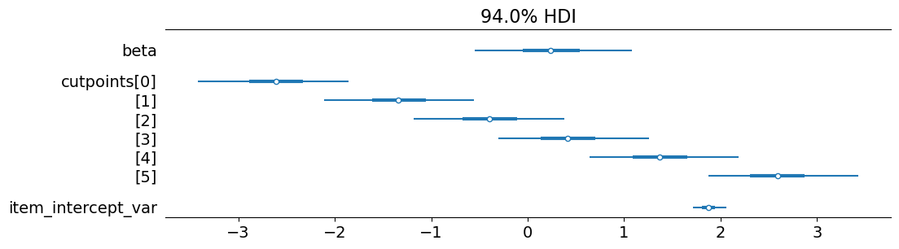
mixed_effects_model_path = os.path.join(
model_dir, "mixed-effects-model/mixed-effects-model.stan"
)
with open(mixed_effects_model_path, "r") as f:
display(HTML(highlight(f.read(), StanLexer(), HtmlFormatter())))data {
int<lower=0> N_resp; // number of responses
int<lower=0> N_subj; // number of subjects
int<lower=0> N_item; // number of items
int<lower=2> N_resp_levels; // number of possible likert scale acceptability judgment responses
int<lower=1> N_fixed; // number of fixed predictors
int<lower=1> N_by_subj; // number of random by-subject predictors
int<lower=1> N_by_item; // number of random by-item predictors
matrix[N_resp,N_fixed] fixed_predictors; // predictors (length and dependency type) including intercept
matrix[N_resp,N_by_subj] by_subj_predictors; // by-subject predictors (length and dependency type) including intercept
matrix[N_resp,N_by_item] by_item_predictors; // by-item predictors (length and dependency type) including intercept
int<lower=1,upper=N_subj> subj[N_resp]; // subject who gave response n
int<lower=1,upper=N_item> item[N_resp]; // item corresponding to response n
int<lower=1,upper=N_resp_levels> resp[N_resp]; // likert scale acceptability judgment responses
int<lower=0,upper=1> marginalize_raneffs; // whether to marginalize out the random effects in computing the likelihood
}
parameters {
vector[N_fixed] fixed_coefs; // fixed coefficients (including intercept)
cov_matrix[N_by_subj] subj_cov; // subject random effects covariance
cov_matrix[N_by_item] item_cov; // item random effects covariance
vector[N_by_subj] by_subj_coefs[N_subj]; // by-subject coefficients (including intercept)
vector[N_by_item] by_item_coefs[N_item]; // by-item coefficients (including intercept)
ordered[N_resp_levels-1] cutpoints; // cutpoints
}
transformed parameters {
real mu[N_resp];
for (n in 1:N_resp) {
mu[n] = fixed_predictors[n] * fixed_coefs +
by_subj_predictors[n] * by_subj_coefs[subj[n]] +
by_item_predictors[n] * by_item_coefs[item[n]];
}
}
model {
// initialize by-subject random effects mean to 0
vector[N_by_subj] subj_mean;
subj_mean = rep_vector(0.0, N_by_subj);
// initialize by-item random effects mean to 0
vector[N_by_item] item_mean;
item_mean = rep_vector(0.0, N_by_item);
// sample the cutpoints
for (k in 1:N_resp_levels-1)
cutpoints[k] ~ normal(0, 1);
// sample the subject intercepts
for (s in 1:N_subj)
by_subj_coefs[s] ~ multi_normal(subj_mean, subj_cov);
// sample the item intercepts
for (i in 1:N_item)
by_item_coefs[i] ~ multi_normal(item_mean, item_cov);
// sample the responses
for (n in 1:N_resp) {
resp[n] ~ ordered_logistic(mu[n], cutpoints);
}
}
generated quantities {
real log_lik[N_resp];
if (marginalize_raneffs == 0) {
for (n in 1:N_resp) {
log_lik[n] = ordered_logistic_lpmf(resp[n] | mu[n], cutpoints);
}
} else {
vector[N_by_subj] by_subj_coefs_simulated[N_subj];
vector[N_by_subj] subj_mean;
subj_mean = rep_vector(0.0, N_by_subj);
for (s in 1:N_subj) {
by_subj_coefs_simulated[s] = multi_normal_rng(subj_mean, subj_cov);
}
vector[N_by_item] by_item_coefs_simulated[N_item];
vector[N_by_item] item_mean;
item_mean = rep_vector(0.0, N_by_item);
for (i in 1:N_item) {
by_item_coefs_simulated[i] = multi_normal_rng(item_mean, item_cov);
}
matrix[N_resp,N_subj,N_item] mu_simulated;
matrix[N_resp,N_subj,N_item] log_lik_by_subj_item;
for (n in 1:N_resp) {
for (s in 1:N_subj) {
for (i in 1:N_item) {
mu_simulated[n,s,i] = fixed_predictors[n] * fixed_coefs +
by_subj_predictors[n] * by_subj_coefs_simulated[s] +
by_item_predictors[n] * by_item_coefs_simulated[i];
log_lik_by_subj_item[n,s,i] = ordered_logistic_lpmf(resp[n] | mu_simulated[n,s,i], cutpoints);
}
}
log_lik[n] = log_sum_exp(log_lik_by_subj_item[n]) - log(N_subj) - log(N_item);
}
}
}
@dataclass
class MixedEffectsData(InterceptOnlyData):
N_fixed: int # number of fixed predictors
fixed_predictors: ndarray # predictors (length and dependency type) including intercept
N_subj: int # number of subjects
N_by_subj: int # number of random by-subject predictors
by_subj_predictors: ndarray # by-subject predictors (length and dependency type) including intercept
subj: ndarray # subject who gave response n
N_item: int # number of items
N_by_item: int # number of random by-item predictors
by_item_predictors: ndarray # by-item predictors (length and dependency type) including intercept
item: ndarray # item corresponding to response n
marginalize_raneffs: int # whether to marginalize out the random effects in computing the likelihood import patsy
class MixedEffectsModel(InterceptOnlyModel):
stan_file = mixed_effects_model_path
data_class = MixedEffectsData
def __init__(self, fixed_formula: str, by_subj_formula: str, by_item_formula: str):
super().__init__()
self.fixed_formula = fixed_formula
self.by_subj_formula = by_subj_formula
self.by_item_formula = by_item_formula
def construct_model_data(self, data: pd.DataFrame, marginalize_raneffs: bool = False):
model_data = super().construct_model_data(data)
self.fixed_predictors = patsy.dmatrix(
self.fixed_formula, data, return_type="dataframe"
)
self.by_subj_predictors = patsy.dmatrix(
self.by_subj_formula, data, return_type="dataframe"
)
self.by_item_predictors = patsy.dmatrix(
self.by_item_formula, data, return_type="dataframe"
)
self.subj_hash_map, subj_hashed = hash_series(data.subject)
self.item_hash_map, item_hashed = hash_series(data.item)
model_data.update({
"N_fixed": self.fixed_predictors.shape[1],
"fixed_predictors": self.fixed_predictors.values,
"N_subj": self.subj_hash_map.shape[0],
"N_by_subj": self.by_subj_predictors.shape[1],
"by_subj_predictors": self.by_subj_predictors.values,
"subj": subj_hashed,
"N_item": self.item_hash_map.shape[0],
"N_by_item": self.by_item_predictors.shape[1],
"by_item_predictors": self.by_item_predictors.values,
"item": item_hashed,
"marginalize_raneffs": int(marginalize_raneffs)
})
return model_dataEvery participant saw every distance (short v. long), every structure (non-island v. island), and every dependency type (WH v. RC) 8 times, but they saw only two island types (ADJ and NP or SUB and WH), each of which they saw 8 times.
\[ \begin{align*} x_n &\sim \text{OrderedLogistic}(\mu, \mathbf{c})\\ \end{align*} \]
distance_levels = ["short", "long"]
structure_levels = ["non", "island"]
dependency_levels = ["WH", "RC"]
island_levels = ["WH", "SUB", "ADJ", "NP"]
distance_term = "C(distance, levels=distance_levels)"
structure_term = "C(structure, levels=structure_levels)"
island_term = "C(island, levels=island_levels)"
dependency_term = "C(dependency, levels=dependency_levels)"
# no_interaction_model = MixedEffectsModel(
# fixed_formula=f"~ ({distance_term} + {structure_term}) * {island_term} * {dependency_term}",
# by_subj_formula=f"~ {distance_term} + {structure_term} + {island_term} + {dependency_term}",
# by_item_formula="~ 1"
# ).fit(data_exp1)
no_interaction_model = MixedEffectsModel(
fixed_formula=f"~ ({distance_term} + {structure_term}) * {island_term} * {dependency_term}",
by_subj_formula="~ 1",
by_item_formula="~ 1"
).fit(data_exp1)
no_interaction_model.model_fit21:38:08 - cmdstanpy - INFO - compiling stan file /home/jovyan/work/island-effects/models/mixed-effects-model/mixed-effects-model.stan to exe file /home/jovyan/work/island-effects/models/mixed-effects-model/mixed-effects-model
21:38:25 - cmdstanpy - INFO - compiled model executable: /home/jovyan/work/island-effects/models/mixed-effects-model/mixed-effects-model
21:38:25 - cmdstanpy - WARNING - Stan compiler has produced 10 warnings:
21:38:25 - cmdstanpy - WARNING -
--- Translating Stan model to C++ code ---
bin/stanc --o=/home/jovyan/work/island-effects/models/mixed-effects-model/mixed-effects-model.hpp /home/jovyan/work/island-effects/models/mixed-effects-model/mixed-effects-model.stan
Warning in '/home/jovyan/work/island-effects/models/mixed-effects-model/mixed-effects-model.stan', line 12, column 2: Declaration
of arrays by placing brackets after a variable name is deprecated and
will be removed in Stan 2.33.0. Instead use the array keyword before the
type. This can be changed automatically using the auto-format flag to
stanc
Warning in '/home/jovyan/work/island-effects/models/mixed-effects-model/mixed-effects-model.stan', line 13, column 2: Declaration
of arrays by placing brackets after a variable name is deprecated and
will be removed in Stan 2.33.0. Instead use the array keyword before the
type. This can be changed automatically using the auto-format flag to
stanc
Warning in '/home/jovyan/work/island-effects/models/mixed-effects-model/mixed-effects-model.stan', line 14, column 2: Declaration
of arrays by placing brackets after a variable name is deprecated and
will be removed in Stan 2.33.0. Instead use the array keyword before the
type. This can be changed automatically using the auto-format flag to
stanc
Warning in '/home/jovyan/work/island-effects/models/mixed-effects-model/mixed-effects-model.stan', line 22, column 2: Declaration
of arrays by placing brackets after a variable name is deprecated and
will be removed in Stan 2.33.0. Instead use the array keyword before the
type. This can be changed automatically using the auto-format flag to
stanc
Warning in '/home/jovyan/work/island-effects/models/mixed-effects-model/mixed-effects-model.stan', line 23, column 2: Declaration
of arrays by placing brackets after a variable name is deprecated and
will be removed in Stan 2.33.0. Instead use the array keyword before the
type. This can be changed automatically using the auto-format flag to
stanc
Warning in '/home/jovyan/work/island-effects/models/mixed-effects-model/mixed-effects-model.stan', line 28, column 2: Declaration
of arrays by placing brackets after a variable name is deprecated and
will be removed in Stan 2.33.0. Instead use the array keyword before the
type. This can be changed automatically using the auto-format flag to
stanc
Warning in '/home/jovyan/work/island-effects/models/mixed-effects-model/mixed-effects-model.stan', line 64, column 2: Declaration
of arrays by placing brackets after a variable name is deprecated and
will be removed in Stan 2.33.0. Instead use the array keyword before the
type. This can be changed automatically using the auto-format flag to
stanc
Warning in '/home/jovyan/work/island-effects/models/mixed-effects-model/mixed-effects-model.stan', line 71, column 4: Declaration
of arrays by placing brackets after a variable name is deprecated and
will be removed in Stan 2.33.0. Instead use the array keyword before the
type. This can be changed automatically using the auto-format flag to
stanc
Warning in '/home/jovyan/work/island-effects/models/mixed-effects-model/mixed-effects-model.stan', line 80, column 4: Declaration
of arrays by placing brackets after a variable name is deprecated and
will be removed in Stan 2.33.0. Instead use the array keyword before the
type. This can be changed automatically using the auto-format flag to
stanc
Warning in '/home/jovyan/work/island-effects/models/mixed-effects-model/mixed-effects-model.stan', line 89, column 4: Declaration
of arrays by placing brackets after a variable name is deprecated and
will be removed in Stan 2.33.0. Instead use the array keyword before the
type. This can be changed automatically using the auto-format flag to
stanc
--- Compiling, linking C++ code ---
g++ -std=c++1y -pthread -D_REENTRANT -Wno-sign-compare -Wno-ignored-attributes -I stan/lib/stan_math/lib/tbb_2020.3/include -O3 -I src -I stan/src -I stan/lib/rapidjson_1.1.0/ -I lib/CLI11-1.9.1/ -I stan/lib/stan_math/ -I stan/lib/stan_math/lib/eigen_3.4.0 -I stan/lib/stan_math/lib/boost_1.78.0 -I stan/lib/stan_math/lib/sundials_6.1.1/include -I stan/lib/stan_math/lib/sundials_6.1.1/src/sundials -DBOOST_DISABLE_ASSERTS -c -Wno-ignored-attributes -x c++ -o /home/jovyan/work/island-effects/models/mixed-effects-model/mixed-effects-model.o /home/jovyan/work/island-effects/models/mixed-effects-model/mixed-effects-model.hpp
g++ -std=c++1y -pthread -D_REENTRANT -Wno-sign-compare -Wno-ignored-attributes -I stan/lib/stan_math/lib/tbb_2020.3/include -O3 -I src -I stan/src -I stan/lib/rapidjson_1.1.0/ -I lib/CLI11-1.9.1/ -I stan/lib/stan_math/ -I stan/lib/stan_math/lib/eigen_3.4.0 -I stan/lib/stan_math/lib/boost_1.78.0 -I stan/lib/stan_math/lib/sundials_6.1.1/include -I stan/lib/stan_math/lib/sundials_6.1.1/src/sundials -DBOOST_DISABLE_ASSERTS -Wl,-L,"/home/jovyan/.cmdstan/cmdstan-2.32.1/stan/lib/stan_math/lib/tbb" -Wl,-rpath,"/home/jovyan/.cmdstan/cmdstan-2.32.1/stan/lib/stan_math/lib/tbb" /home/jovyan/work/island-effects/models/mixed-effects-model/mixed-effects-model.o src/cmdstan/main.o -Wl,-L,"/home/jovyan/.cmdstan/cmdstan-2.32.1/stan/lib/stan_math/lib/tbb" -Wl,-rpath,"/home/jovyan/.cmdstan/cmdstan-2.32.1/stan/lib/stan_math/lib/tbb" stan/lib/stan_math/lib/sundials_6.1.1/lib/libsundials_nvecserial.a stan/lib/stan_math/lib/sundials_6.1.1/lib/libsundials_cvodes.a stan/lib/stan_math/lib/sundials_6.1.1/lib/libsundials_idas.a stan/lib/stan_math/lib/sundials_6.1.1/lib/libsundials_kinsol.a stan/lib/stan_math/lib/tbb/libtbb.so.2 -o /home/jovyan/work/island-effects/models/mixed-effects-model/mixed-effects-model
rm -f /home/jovyan/work/island-effects/models/mixed-effects-model/mixed-effects-model.o
21:38:25 - cmdstanpy - INFO - CmdStan start processing
21:46:23 - cmdstanpy - INFO - CmdStan done processing.
21:46:23 - cmdstanpy - WARNING - Non-fatal error during sampling:
Exception: ordered_logistic: Cut-points is not a valid ordered vector. The element at 2 is -1208.95, but should be greater than the previous element, -1208.95 (in '/home/jovyan/work/island-effects/models/mixed-effects-model/mixed-effects-model.stan', line 59, column 4 to column 49)
Exception: ordered_logistic: Cut-points is not a valid ordered vector. The element at 2 is -1207.95, but should be greater than the previous element, -1207.95 (in '/home/jovyan/work/island-effects/models/mixed-effects-model/mixed-effects-model.stan', line 59, column 4 to column 49)
Exception: ordered_logistic: Cut-points is not a valid ordered vector. The element at 2 is -301.876, but should be greater than the previous element, -301.876 (in '/home/jovyan/work/island-effects/models/mixed-effects-model/mixed-effects-model.stan', line 59, column 4 to column 49)
Exception: ordered_logistic: Cut-points is not a valid ordered vector. The element at 3 is -75.5767, but should be greater than the previous element, -75.5767 (in '/home/jovyan/work/island-effects/models/mixed-effects-model/mixed-effects-model.stan', line 59, column 4 to column 49)
Exception: ordered_logistic: Cut-points is not a valid ordered vector. The element at 3 is -18.8099, but should be greater than the previous element, -18.8099 (in '/home/jovyan/work/island-effects/models/mixed-effects-model/mixed-effects-model.stan', line 59, column 4 to column 49)
Exception: multi_normal_lpdf: LDLT_Factor of covariance parameter is not positive definite. last conditional variance is 0. (in '/home/jovyan/work/island-effects/models/mixed-effects-model/mixed-effects-model.stan', line 51, column 4 to column 57)
Exception: multi_normal_lpdf: LDLT_Factor of covariance parameter is not positive definite. last conditional variance is 0. (in '/home/jovyan/work/island-effects/models/mixed-effects-model/mixed-effects-model.stan', line 51, column 4 to column 57)
Exception: ordered_logistic: Cut-points is not a valid ordered vector. The element at 3 is -46.6894, but should be greater than the previous element, -46.6894 (in '/home/jovyan/work/island-effects/models/mixed-effects-model/mixed-effects-model.stan', line 59, column 4 to column 49)
Exception: ordered_logistic: Cut-points is not a valid ordered vector. The element at 2 is -31.068, but should be greater than the previous element, -31.068 (in '/home/jovyan/work/island-effects/models/mixed-effects-model/mixed-effects-model.stan', line 59, column 4 to column 49)
Exception: ordered_logistic: Cut-points is not a valid ordered vector. The element at 2 is -31.0959, but should be greater than the previous element, -31.0959 (in '/home/jovyan/work/island-effects/models/mixed-effects-model/mixed-effects-model.stan', line 59, column 4 to column 49)
Exception: ordered_logistic: Cut-points is not a valid ordered vector. The element at 2 is -9.37668, but should be greater than the previous element, -9.37668 (in '/home/jovyan/work/island-effects/models/mixed-effects-model/mixed-effects-model.stan', line 59, column 4 to column 49)
Exception: ordered_logistic: Cut-points is not a valid ordered vector. The element at 5 is 2374.84, but should be greater than the previous element, 2374.84 (in '/home/jovyan/work/island-effects/models/mixed-effects-model/mixed-effects-model.stan', line 59, column 4 to column 49)
Exception: ordered_logistic: Cut-points is not a valid ordered vector. The element at 5 is 0.88686, but should be greater than the previous element, 0.88686 (in '/home/jovyan/work/island-effects/models/mixed-effects-model/mixed-effects-model.stan', line 59, column 4 to column 49)
Exception: multi_normal_lpdf: LDLT_Factor of covariance parameter is not positive definite. last conditional variance is 0. (in '/home/jovyan/work/island-effects/models/mixed-effects-model/mixed-effects-model.stan', line 51, column 4 to column 57)
Exception: ordered_logistic: Cut-points is not a valid ordered vector. The element at 3 is inf, but should be greater than the previous element, inf (in '/home/jovyan/work/island-effects/models/mixed-effects-model/mixed-effects-model.stan', line 59, column 4 to column 49)
Exception: ordered_logistic: Cut-points is not a valid ordered vector. The element at 5 is 23188.7, but should be greater than the previous element, 23188.7 (in '/home/jovyan/work/island-effects/models/mixed-effects-model/mixed-effects-model.stan', line 59, column 4 to column 49)
Exception: ordered_logistic: Cut-points is not a valid ordered vector. The element at 2 is -1299.22, but should be greater than the previous element, -1299.22 (in '/home/jovyan/work/island-effects/models/mixed-effects-model/mixed-effects-model.stan', line 59, column 4 to column 49)
Exception: ordered_logistic: Cut-points is not a valid ordered vector. The element at 2 is -1299.38, but should be greater than the previous element, -1299.38 (in '/home/jovyan/work/island-effects/models/mixed-effects-model/mixed-effects-model.stan', line 59, column 4 to column 49)
Exception: ordered_logistic: Cut-points is not a valid ordered vector. The element at 2 is -324.804, but should be greater than the previous element, -324.804 (in '/home/jovyan/work/island-effects/models/mixed-effects-model/mixed-effects-model.stan', line 59, column 4 to column 49)
Exception: ordered_logistic: Cut-points is not a valid ordered vector. The element at 2 is -80.9008, but should be greater than the previous element, -80.9008 (in '/home/jovyan/work/island-effects/models/mixed-effects-model/mixed-effects-model.stan', line 59, column 4 to column 49)
Exception: ordered_logistic: Cut-points is not a valid ordered vector. The element at 2 is -20.0344, but should be greater than the previous element, -20.0344 (in '/home/jovyan/work/island-effects/models/mixed-effects-model/mixed-effects-model.stan', line 59, column 4 to column 49)
Exception: multi_normal_lpdf: LDLT_Factor of covariance parameter is not positive definite. last conditional variance is 0. (in '/home/jovyan/work/island-effects/models/mixed-effects-model/mixed-effects-model.stan', line 51, column 4 to column 57)
Exception: ordered_logistic: Cut-points is not a valid ordered vector. The element at 2 is -4484.4, but should be greater than the previous element, -4484.4 (in '/home/jovyan/work/island-effects/models/mixed-effects-model/mixed-effects-model.stan', line 59, column 4 to column 49)
Exception: ordered_logistic: Cut-points is not a valid ordered vector. The element at 2 is -43.4421, but should be greater than the previous element, -43.4421 (in '/home/jovyan/work/island-effects/models/mixed-effects-model/mixed-effects-model.stan', line 59, column 4 to column 49)
Exception: ordered_logistic: Cut-points is not a valid ordered vector. The element at 3 is -1171.52, but should be greater than the previous element, -1171.52 (in '/home/jovyan/work/island-effects/models/mixed-effects-model/mixed-effects-model.stan', line 59, column 4 to column 49)
Exception: ordered_logistic: Cut-points is not a valid ordered vector. The element at 3 is -1170.8, but should be greater than the previous element, -1170.8 (in '/home/jovyan/work/island-effects/models/mixed-effects-model/mixed-effects-model.stan', line 59, column 4 to column 49)
Exception: ordered_logistic: Cut-points is not a valid ordered vector. The element at 4 is -291.705, but should be greater than the previous element, -291.705 (in '/home/jovyan/work/island-effects/models/mixed-effects-model/mixed-effects-model.stan', line 59, column 4 to column 49)
Exception: ordered_logistic: Cut-points is not a valid ordered vector. The element at 4 is -72.3411, but should be greater than the previous element, -72.3411 (in '/home/jovyan/work/island-effects/models/mixed-effects-model/mixed-effects-model.stan', line 59, column 4 to column 49)
Exception: ordered_logistic: Cut-points is not a valid ordered vector. The element at 4 is -17.198, but should be greater than the previous element, -17.198 (in '/home/jovyan/work/island-effects/models/mixed-effects-model/mixed-effects-model.stan', line 59, column 4 to column 49)
Exception: multi_normal_lpdf: LDLT_Factor of covariance parameter is not positive definite. last conditional variance is 0. (in '/home/jovyan/work/island-effects/models/mixed-effects-model/mixed-effects-model.stan', line 51, column 4 to column 57)
Exception: multi_normal_lpdf: LDLT_Factor of covariance parameter is not positive definite. last conditional variance is 0. (in '/home/jovyan/work/island-effects/models/mixed-effects-model/mixed-effects-model.stan', line 51, column 4 to column 57)
Consider re-running with show_console=True if the above output is unclear!Fitting model...
Saving model...arviz.InferenceData
-
<xarray.Dataset> Dimensions: (chain: 4, draw: 1000, fixed_coefs_dim_0: 24, subj_cov_dim_0: 1, subj_cov_dim_1: 1, item_cov_dim_0: 1, item_cov_dim_1: 1, by_subj_coefs_dim_0: 184, by_subj_coefs_dim_1: 1, by_item_coefs_dim_0: 256, by_item_coefs_dim_1: 1, cutpoints_dim_0: 6, mu_dim_0: 3515) Coordinates: (12/13) * chain (chain) int64 0 1 2 3 * draw (draw) int64 0 1 2 3 4 5 6 ... 994 995 996 997 998 999 * fixed_coefs_dim_0 (fixed_coefs_dim_0) int64 0 1 2 3 4 ... 19 20 21 22 23 * subj_cov_dim_0 (subj_cov_dim_0) int64 0 * subj_cov_dim_1 (subj_cov_dim_1) int64 0 * item_cov_dim_0 (item_cov_dim_0) int64 0 ... ... * by_subj_coefs_dim_0 (by_subj_coefs_dim_0) int64 0 1 2 3 ... 180 181 182 183 * by_subj_coefs_dim_1 (by_subj_coefs_dim_1) int64 0 * by_item_coefs_dim_0 (by_item_coefs_dim_0) int64 0 1 2 3 ... 252 253 254 255 * by_item_coefs_dim_1 (by_item_coefs_dim_1) int64 0 * cutpoints_dim_0 (cutpoints_dim_0) int64 0 1 2 3 4 5 * mu_dim_0 (mu_dim_0) int64 0 1 2 3 4 ... 3510 3511 3512 3513 3514 Data variables: fixed_coefs (chain, draw, fixed_coefs_dim_0) float64 4.376 ... -... subj_cov (chain, draw, subj_cov_dim_0, subj_cov_dim_1) float64 ... item_cov (chain, draw, item_cov_dim_0, item_cov_dim_1) float64 ... by_subj_coefs (chain, draw, by_subj_coefs_dim_0, by_subj_coefs_dim_1) float64 ... by_item_coefs (chain, draw, by_item_coefs_dim_0, by_item_coefs_dim_1) float64 ... cutpoints (chain, draw, cutpoints_dim_0) float64 -3.88 ... 2.241 mu (chain, draw, mu_dim_0) float64 -2.738 -4.059 ... 2.552 Attributes: created_at: 2023-05-09T21:46:28.262386 arviz_version: 0.15.1 inference_library: cmdstanpy inference_library_version: 1.1.0 -
<xarray.Dataset> Dimensions: (chain: 4, draw: 1000, log_lik_dim_0: 3515) Coordinates: * chain (chain) int64 0 1 2 3 * draw (draw) int64 0 1 2 3 4 5 6 7 ... 993 994 995 996 997 998 999 * log_lik_dim_0 (log_lik_dim_0) int64 0 1 2 3 4 ... 3510 3511 3512 3513 3514 Data variables: log_lik (chain, draw, log_lik_dim_0) float64 -1.419 -2.282 ... -1.269 Attributes: created_at: 2023-05-09T21:46:28.315994 arviz_version: 0.15.1 inference_library: cmdstanpy inference_library_version: 1.1.0 -
<xarray.Dataset> Dimensions: (chain: 4, draw: 1000) Coordinates: * chain (chain) int64 0 1 2 3 * draw (draw) int64 0 1 2 3 4 5 6 ... 993 994 995 996 997 998 999 Data variables: lp (chain, draw) float64 -5.341e+03 -5.295e+03 ... -5.334e+03 acceptance_rate (chain, draw) float64 0.9962 0.9696 ... 0.9781 0.9443 step_size (chain, draw) float64 0.03438 0.03438 ... 0.03145 0.03145 tree_depth (chain, draw) int64 7 7 7 7 7 7 7 7 7 ... 7 7 7 7 7 7 7 7 7 n_steps (chain, draw) int64 127 127 127 127 127 ... 127 127 127 127 diverging (chain, draw) bool False False False ... False False False energy (chain, draw) float64 5.566e+03 5.554e+03 ... 5.564e+03 Attributes: created_at: 2023-05-09T21:46:28.267550 arviz_version: 0.15.1 inference_library: cmdstanpy inference_library_version: 1.1.0
arviz.waic(item_random_effects_model.model_fit)/opt/conda/lib/python3.10/site-packages/arviz/stats/stats.py:1645: UserWarning: For one or more samples the posterior variance of the log predictive densities exceeds 0.4. This could be indication of WAIC starting to fail.
See http://arxiv.org/abs/1507.04544 for details
warnings.warn(Computed from 4000 posterior samples and 3515 observations log-likelihood matrix.
Estimate SE
elpd_waic -5673.12 39.97
p_waic 241.68 -
There has been a warning during the calculation. Please check the results.arviz.waic(no_interaction_model.model_fit)/opt/conda/lib/python3.10/site-packages/arviz/stats/stats.py:1645: UserWarning: For one or more samples the posterior variance of the log predictive densities exceeds 0.4. This could be indication of WAIC starting to fail.
See http://arxiv.org/abs/1507.04544 for details
warnings.warn(Computed from 4000 posterior samples and 3515 observations log-likelihood matrix.
Estimate SE
elpd_waic -5271.23 43.77
p_waic 365.84 -
There has been a warning during the calculation. Please check the results.arviz.waic(item_random_effects_model.pointwise_log_likelihoods(data_exp3, marginalize_raneffs=True))12:46:54 - cmdstanpy - INFO - Chain [1] start processing
12:46:54 - cmdstanpy - INFO - Chain [2] start processing
12:46:54 - cmdstanpy - INFO - Chain [3] start processing
12:46:58 - cmdstanpy - INFO - Chain [3] done processing
12:46:58 - cmdstanpy - INFO - Chain [4] start processing
12:46:59 - cmdstanpy - INFO - Chain [2] done processing
12:46:59 - cmdstanpy - INFO - Chain [1] done processing
12:47:03 - cmdstanpy - INFO - Chain [4] done processing
12:47:05 - cmdstanpy - WARNING - Sample doesn't contain draws from warmup iterations, rerun sampler with "save_warmup=True".
12:47:05 - cmdstanpy - WARNING - Sample doesn't contain draws from warmup iterations, rerun sampler with "save_warmup=True".
12:47:05 - cmdstanpy - WARNING - Sample doesn't contain draws from warmup iterations, rerun sampler with "save_warmup=True".Computed from 4000 posterior samples and 3548 observations log-likelihood matrix.
Estimate SE
elpd_waic -6894.25 6.64
p_waic 24.77 -no_interaction_model.pointwise_log_likelihoods(data_exp3, marginalize_raneffs=True)12:47:06 - cmdstanpy - INFO - Chain [1] start processing
12:47:06 - cmdstanpy - INFO - Chain [2] start processing
12:47:06 - cmdstanpy - INFO - Chain [3] start processing
12:47:10 - cmdstanpy - INFO - Chain [2] done processing
12:47:10 - cmdstanpy - ERROR - Chain [2] error: error during processing Operation not permitted
12:47:10 - cmdstanpy - INFO - Chain [4] start processing
12:47:10 - cmdstanpy - INFO - Chain [1] done processing
12:47:10 - cmdstanpy - ERROR - Chain [1] error: error during processing Operation not permitted
12:47:10 - cmdstanpy - INFO - Chain [3] done processing
12:47:10 - cmdstanpy - ERROR - Chain [3] error: error during processing Operation not permitted
12:47:13 - cmdstanpy - INFO - Chain [4] done processing
12:47:13 - cmdstanpy - ERROR - Chain [4] error: error during processing Operation not permitted
/opt/conda/lib/python3.10/site-packages/cmdstanpy/stanfit/gq.py:645: UserWarning: loadtxt: input contained no data: "<generator object CmdStanGQ._assemble_generated_quantities.<locals>.<genexpr> at 0xffff15f17ae0>"
gq_sample[:, chain, :] = np.loadtxt(ValueError: could not broadcast input array from shape (0,1) into shape (1000,1)twoway_interaction_model = MixedEffectsModel(
fixed_formula=no_interaction_model.fixed_formula + f"+ {distance_term} * {structure_term}",
by_subj_formula=no_interaction_model.by_subj_formula,
by_item_formula="~ 1"
).fit(data_exp1)
twoway_interaction_model.model_fitINFO:cmdstanpy:found newer exe file, not recompiling
INFO:cmdstanpy:compiled model file: /home/jovyan/work/Projects/representation-learning-course/discrete-and-continuous-representations/island-effects/mixed-effects-model
Chain 1 - warmup: 0%| | 0/1 [00:00<?, ?it/s]
Chain 2 - warmup: 0%| | 0/1 [00:00<?, ?it/s]
Chain 3 - warmup: 0%| | 0/1 [00:00<?, ?it/s]
Chain 2 - warmup: 0%| | 0/1 [00:00<?, ?it/s]
Chain 3 - warmup: 0%| | 0/1 [00:00<?, ?it/s]
Chain 4 - warmup: 0%| | 0/1 [00:00<?, ?it/s]
Chain 1 - warmup: 0%| | 0/2000 [00:00<?, ?it/s]
Chain 2 - warmup: 0%| | 0/2000 [00:00<?, ?it/s]
Chain 3 - warmup: 0%| | 0/2000 [00:00<?, ?it/s]
Chain 4 - warmup: 0%| | 0/2000 [00:00<?, ?it/s]
Chain 4 - warmup: 5%|█ | 100/2000 [00:26<08:23, 3.77it/s]
Chain 2 - warmup: 5%|█ | 100/2000 [00:27<08:47, 3.60it/s]
Chain 1 - warmup: 5%|█ | 100/2000 [00:36<11:41, 2.71it/s]
Chain 4 - warmup: 10%|██▏ | 200/2000 [00:49<07:17, 4.12it/s]
Chain 1 - warmup: 10%|██▏ | 200/2000 [01:00<08:42, 3.44it/s]
Chain 3 - warmup: 10%|██▏ | 200/2000 [01:05<09:53, 3.03it/s]
Chain 1 - warmup: 15%|███▎ | 300/2000 [01:22<07:21, 3.85it/s]
Chain 2 - warmup: 15%|███▎ | 300/2000 [01:25<07:59, 3.55it/s]
Chain 3 - warmup: 15%|███▎ | 300/2000 [01:30<08:15, 3.43it/s]
Chain 1 - warmup: 20%|████▍ | 400/2000 [01:43<06:24, 4.16it/s]
Chain 2 - warmup: 20%|████▍ | 400/2000 [01:45<06:42, 3.98it/s]
Chain 3 - warmup: 20%|████▍ | 400/2000 [01:48<06:35, 4.05it/s]
Chain 1 - warmup: 25%|█████▌ | 500/2000 [02:04<05:44, 4.35it/s]
Chain 2 - warmup: 25%|█████▌ | 500/2000 [02:09<06:10, 4.05it/s]
Chain 3 - warmup: 25%|█████▌ | 500/2000 [02:11<06:05, 4.10it/s]
Chain 1 - warmup: 30%|██████ | 600/2000 [17:22<1:16:21, 3.27s/it]
Chain 2 - warmup: 30%|██████ | 600/2000 [17:28<1:16:44, 3.29s/it]
Chain 3 - warmup: 30%|██████ | 600/2000 [17:30<1:16:36, 3.28s/it]
Chain 1 - warmup: 35%|███████▋ | 700/2000 [17:39<48:54, 2.26s/it]
Chain 2 - warmup: 35%|███████▋ | 700/2000 [17:47<49:16, 2.27s/it]
Chain 1 - warmup: 40%|████████▊ | 800/2000 [17:56<31:49, 1.59s/it]
Chain 4 - warmup: 40%|████████▊ | 800/2000 [17:56<44:12, 2.21s/it]
Chain 3 - warmup: 40%|████████▊ | 800/2000 [18:06<32:03, 1.60s/it]
Chain 1 - warmup: 45%|█████████▉ | 900/2000 [18:14<21:07, 1.15s/it]
Chain 4 - warmup: 45%|█████████▉ | 900/2000 [18:15<28:53, 1.58s/it]
Chain 3 - warmup: 45%|█████████ | 900/2000 [33:53<1:14:30, 4.06s/it]
Chain 1 - sample: 50%|█████████▌ | 1001/2000 [34:07<1:01:57, 3.72s/it]
Chain 4 - warmup: 50%|█████████▌ | 1000/2000 [34:10<1:07:17, 4.04s/it]
Chain 4 - sample: 50%|█████████▌ | 1000/2000 [34:10<1:07:17, 4.04s/it]
Chain 4 - sample: 50%|█████████▌ | 1001/2000 [34:10<1:06:56, 4.02s/it]
Chain 3 - warmup: 50%|██████████▌ | 1000/2000 [34:15<47:57, 2.88s/it]
Chain 3 - sample: 50%|██████████▌ | 1000/2000 [34:15<47:57, 2.88s/it]
Chain 2 - warmup: 50%|██████████▌ | 1000/2000 [34:19<48:09, 2.89s/it]
Chain 2 - sample: 50%|██████████▌ | 1000/2000 [34:20<48:09, 2.89s/it]
Chain 1 - sample: 55%|███████████▌ | 1100/2000 [34:29<35:44, 2.38s/it]
Chain 4 - sample: 55%|███████████▌ | 1100/2000 [34:32<38:30, 2.57s/it]
Chain 3 - sample: 55%|███████████▌ | 1100/2000 [34:38<30:59, 2.07s/it]
Chain 1 - sample: 60%|███████████▍ | 1200/2000 [51:47<1:09:42, 5.23s/it]
Chain 4 - sample: 60%|███████████▍ | 1200/2000 [51:50<1:11:17, 5.35s/it]
Chain 3 - sample: 60%|███████████▍ | 1200/2000 [51:55<1:01:14, 4.59s/it]
Chain 1 - sample: 65%|█████████████▋ | 1300/2000 [52:10<41:19, 3.54s/it]
Chain 4 - sample: 65%|█████████████▋ | 1300/2000 [52:13<42:14, 3.62s/it]
Chain 3 - sample: 65%|█████████████▋ | 1300/2000 [52:18<38:09, 3.27s/it]
Chain 1 - sample: 70%|██████████████▋ | 1400/2000 [52:32<24:38, 2.46s/it]
Chain 4 - sample: 70%|██████████████▋ | 1400/2000 [52:35<25:10, 2.52s/it]
Chain 3 - sample: 70%|██████████████▋ | 1400/2000 [52:41<23:30, 2.35s/it]
Chain 1 - sample: 75%|███████████████▊ | 1500/2000 [52:55<14:37, 1.75s/it]
Chain 4 - sample: 75%|███████████████▊ | 1500/2000 [52:58<14:55, 1.79s/it]
Chain 3 - sample: 75%|███████████████▊ | 1500/2000 [53:03<14:15, 1.71s/it]
Chain 1 - sample: 80%|███████████████▏ | 1600/2000 [1:08:29<27:27, 4.12s/it]
Chain 4 - sample: 80%|███████████████▏ | 1600/2000 [1:08:32<27:37, 4.14s/it]
Chain 3 - sample: 80%|███████████████▏ | 1600/2000 [1:08:37<26:42, 4.01s/it]
Chain 1 - sample: 85%|████████████████▏ | 1700/2000 [1:08:51<14:35, 2.92s/it]
Chain 4 - sample: 85%|████████████████▏ | 1700/2000 [1:08:55<14:41, 2.94s/it]
Chain 3 - sample: 85%|████████████████▏ | 1700/2000 [1:09:00<14:20, 2.87s/it]
Chain 1 - sample: 90%|█████████████████ | 1800/2000 [1:09:14<06:59, 2.10s/it]
Chain 4 - sample: 90%|█████████████████ | 1800/2000 [1:09:17<07:01, 2.11s/it]
Chain 3 - sample: 90%|█████████████████ | 1800/2000 [1:09:23<06:55, 2.08s/it]
Chain 1 - sample: 95%|██████████████████ | 1900/2000 [1:25:18<07:18, 4.39s/it]
Chain 4 - sample: 95%|██████████████████ | 1900/2000 [1:25:21<07:19, 4.40s/it]
Chain 3 - sample: 95%|██████████████████ | 1900/2000 [1:25:27<07:14, 4.35s/it]
Chain 1 - done: 100%|███████████████████| 2000/2000 [1:25:41<00:00, 3.13s/it]
Chain 4 - sample: 100%|███████████████████| 2000/2000 [1:25:44<00:00, 3.14s/it]
Chain 4 - done: 100%|███████████████████| 2000/2000 [1:25:45<00:00, 3.14s/it]
Chain 3 - sample: 100%|███████████████████| 2000/2000 [1:25:49<00:00, 3.11s/it]
Chain 3 - done: 100%|███████████████████| 2000/2000 [1:25:49<00:00, 3.11s/it]
Chain 2 - sample: 100%|███████████████████| 2000/2000 [1:25:56<00:00, 2.51s/it]
Chain 1 - done: 100%|███████████████████| 2000/2000 [1:25:56<00:00, 2.58s/it]
Chain 2 - done: 100%|███████████████████| 2000/2000 [1:25:56<00:00, 2.58s/it]
Chain 3 - done: 100%|███████████████████| 2000/2000 [1:25:56<00:00, 2.58s/it]
Chain 4 - done: 100%|███████████████████| 2000/2000 [1:25:56<00:00, 2.58s/it]arviz.InferenceData
-
<xarray.Dataset> Dimensions: (chain: 4, draw: 1000, fixed_coefs_dim_0: 25, subj_cov_dim_0: 1, subj_cov_dim_1: 1, item_cov_dim_0: 1, item_cov_dim_1: 1, by_subj_coefs_dim_0: 184, by_subj_coefs_dim_1: 1, by_item_coefs_dim_0: 256, by_item_coefs_dim_1: 1, cutpoints_dim_0: 6, mu_dim_0: 3515) Coordinates: (12/13) * chain (chain) int64 0 1 2 3 * draw (draw) int64 0 1 2 3 4 5 6 ... 994 995 996 997 998 999 * fixed_coefs_dim_0 (fixed_coefs_dim_0) int64 0 1 2 3 4 ... 20 21 22 23 24 * subj_cov_dim_0 (subj_cov_dim_0) int64 0 * subj_cov_dim_1 (subj_cov_dim_1) int64 0 * item_cov_dim_0 (item_cov_dim_0) int64 0 ... ... * by_subj_coefs_dim_0 (by_subj_coefs_dim_0) int64 0 1 2 3 ... 180 181 182 183 * by_subj_coefs_dim_1 (by_subj_coefs_dim_1) int64 0 * by_item_coefs_dim_0 (by_item_coefs_dim_0) int64 0 1 2 3 ... 252 253 254 255 * by_item_coefs_dim_1 (by_item_coefs_dim_1) int64 0 * cutpoints_dim_0 (cutpoints_dim_0) int64 0 1 2 3 4 5 * mu_dim_0 (mu_dim_0) int64 0 1 2 3 4 ... 3510 3511 3512 3513 3514 Data variables: fixed_coefs (chain, draw, fixed_coefs_dim_0) float64 4.959 ... -... subj_cov (chain, draw, subj_cov_dim_0, subj_cov_dim_1) float64 ... item_cov (chain, draw, item_cov_dim_0, item_cov_dim_1) float64 ... by_subj_coefs (chain, draw, by_subj_coefs_dim_0, by_subj_coefs_dim_1) float64 ... by_item_coefs (chain, draw, by_item_coefs_dim_0, by_item_coefs_dim_1) float64 ... cutpoints (chain, draw, cutpoints_dim_0) float64 -3.273 ... 3.149 mu (chain, draw, mu_dim_0) float64 -2.447 -3.539 ... 3.636 Attributes: created_at: 2023-05-07T01:25:39.947867 arviz_version: 0.15.1 inference_library: cmdstanpy inference_library_version: 0.9.76 -
<xarray.Dataset> Dimensions: (chain: 4, draw: 1000, log_lik_dim_0: 3515) Coordinates: * chain (chain) int64 0 1 2 3 * draw (draw) int64 0 1 2 3 4 5 6 7 ... 993 994 995 996 997 998 999 * log_lik_dim_0 (log_lik_dim_0) int64 0 1 2 3 4 ... 3510 3511 3512 3513 3514 Data variables: log_lik (chain, draw, log_lik_dim_0) float64 -1.189 -2.324 ... -1.387 Attributes: created_at: 2023-05-07T01:25:40.001918 arviz_version: 0.15.1 inference_library: cmdstanpy inference_library_version: 0.9.76 -
<xarray.Dataset> Dimensions: (chain: 4, draw: 1000) Coordinates: * chain (chain) int64 0 1 2 3 * draw (draw) int64 0 1 2 3 4 5 6 ... 993 994 995 996 997 998 999 Data variables: lp (chain, draw) float64 -5.271e+03 -5.262e+03 ... -5.276e+03 acceptance_rate (chain, draw) float64 0.9499 0.8684 ... 0.9541 0.9943 step_size (chain, draw) float64 0.03896 0.03896 ... 0.03334 0.03334 tree_depth (chain, draw) int64 7 7 7 7 7 7 7 7 7 ... 7 7 7 7 7 7 7 7 7 n_steps (chain, draw) int64 127 127 127 127 127 ... 127 127 127 127 diverging (chain, draw) bool False False False ... False False False energy (chain, draw) float64 5.508e+03 5.532e+03 ... 5.51e+03 Attributes: created_at: 2023-05-07T01:25:39.952911 arviz_version: 0.15.1 inference_library: cmdstanpy inference_library_version: 0.9.76
full_interaction_model = MixedEffectsModel(
fixed_formula=f"~ {distance_term} * {structure_term} * {island_term} * {dependency_term}",
by_subj_formula=no_interaction_model.by_subj_formula,
by_item_formula="~ 1"
).fit(data_exp1)
full_interaction_model.model_fitINFO:cmdstanpy:found newer exe file, not recompiling
INFO:cmdstanpy:compiled model file: /home/jovyan/work/Projects/representation-learning-course/discrete-and-continuous-representations/island-effects/mixed-effects-model
Chain 1 - warmup: 0%| | 0/1 [00:00<?, ?it/s]
Chain 2 - warmup: 0%| | 0/1 [00:00<?, ?it/s]
Chain 2 - warmup: 0%| | 0/1 [00:00<?, ?it/s]
Chain 3 - warmup: 0%| | 0/1 [00:00<?, ?it/s]
Chain 4 - warmup: 0%| | 0/1 [00:00<?, ?it/s]
Chain 3 - warmup: 0%| | 0/1 [00:00<?, ?it/s]
Chain 1 - warmup: 0%| | 0/2000 [00:00<?, ?it/s]
Chain 2 - warmup: 0%| | 0/2000 [00:00<?, ?it/s]
Chain 3 - warmup: 0%| | 0/2000 [00:00<?, ?it/s]
Chain 1 - warmup: 5%|█ | 100/2000 [17:17<5:28:27, 10.37s/it]
Chain 4 - warmup: 5%|█ | 100/2000 [17:20<5:29:32, 10.41s/it]
Chain 2 - warmup: 5%|█ | 100/2000 [17:25<5:30:55, 10.45s/it]
Chain 3 - warmup: 5%|█ | 100/2000 [17:26<5:31:26, 10.47s/it]
Chain 1 - warmup: 10%|██ | 200/2000 [17:51<2:14:05, 4.47s/it]
Chain 3 - warmup: 10%|██ | 200/2000 [33:18<4:57:19, 9.91s/it]
Chain 2 - warmup: 10%|██ | 200/2000 [33:26<4:58:42, 9.96s/it]
Chain 1 - warmup: 15%|███ | 300/2000 [49:54<5:17:40, 11.21s/it]
Chain 3 - warmup: 15%|███ | 300/2000 [50:04<4:42:38, 9.98s/it]
Chain 2 - warmup: 15%|███ | 300/2000 [50:08<4:43:00, 9.99s/it]
Chain 1 - warmup: 20%|████ | 400/2000 [50:19<3:03:37, 6.89s/it]
Chain 3 - warmup: 20%|████ | 400/2000 [50:30<2:43:49, 6.14s/it]
Chain 2 - warmup: 20%|████ | 400/2000 [50:37<2:44:11, 6.16s/it]
Chain 1 - warmup: 25%|█████ | 500/2000 [50:48<1:52:40, 4.51s/it]
Chain 3 - warmup: 25%|████▌ | 500/2000 [1:07:32<3:10:15, 7.61s/it]
Chain 2 - warmup: 25%|████▌ | 500/2000 [1:07:39<3:10:34, 7.62s/it]
Chain 1 - warmup: 30%|█████▍ | 600/2000 [1:07:49<2:30:20, 6.44s/it]
Chain 3 - warmup: 30%|█████▍ | 600/2000 [1:08:03<1:59:40, 5.13s/it]
Chain 4 - warmup: 35%|██████▎ | 700/2000 [1:08:05<1:42:30, 4.73s/it]
Chain 1 - warmup: 35%|██████▎ | 700/2000 [1:08:13<1:35:40, 4.42s/it]
Chain 2 - warmup: 35%|██████▎ | 700/2000 [1:24:16<2:23:24, 6.62s/it]
Chain 4 - warmup: 40%|███████▏ | 800/2000 [1:24:17<2:06:20, 6.32s/it]
Chain 1 - warmup: 40%|███████▏ | 800/2000 [1:24:22<2:01:54, 6.10s/it]
Chain 2 - warmup: 40%|███████▏ | 800/2000 [1:24:41<1:31:48, 4.59s/it]
Chain 3 - warmup: 40%|███████▏ | 800/2000 [1:24:41<1:31:59, 4.60s/it]
Chain 1 - warmup: 45%|████████ | 900/2000 [1:39:50<2:09:59, 7.09s/it]
Chain 2 - warmup: 45%|████████ | 900/2000 [1:40:08<1:50:58, 6.05s/it]
Chain 3 - warmup: 45%|████████ | 900/2000 [1:40:08<1:51:05, 6.06s/it]
Chain 4 - warmup: 50%|████████▌ | 1000/2000 [1:40:13<1:24:54, 5.09s/it]
Chain 4 - sample: 50%|████████▌ | 1000/2000 [1:40:13<1:24:54, 5.09s/it]
Chain 1 - sample: 50%|████████▌ | 1001/2000 [1:40:19<1:22:44, 4.97s/it]
Chain 4 - sample: 55%|██████████▍ | 1100/2000 [1:40:37<48:20, 3.22s/it]
Chain 2 - warmup: 50%|████████▌ | 1000/2000 [1:40:38<1:11:18, 4.28s/it]
Chain 2 - sample: 50%|████████▌ | 1000/2000 [1:40:38<1:11:18, 4.28s/it]
Chain 2 - sample: 50%|████████▌ | 1001/2000 [1:40:38<1:10:56, 4.26s/it]
Chain 3 - warmup: 50%|████████▌ | 1000/2000 [1:40:42<1:11:33, 4.29s/it]
Chain 3 - sample: 50%|████████▌ | 1000/2000 [1:40:42<1:11:33, 4.29s/it]
Chain 1 - sample: 55%|██████████▍ | 1100/2000 [1:40:43<47:21, 3.16s/it]
Chain 4 - sample: 60%|██████████▏ | 1200/2000 [1:58:29<1:18:31, 5.89s/it]
Chain 2 - sample: 55%|█████████▎ | 1100/2000 [1:58:29<1:41:35, 6.77s/it]
Chain 1 - sample: 60%|██████████▏ | 1200/2000 [1:58:33<1:17:55, 5.84s/it]
Chain 4 - sample: 65%|███████████ | 1300/2000 [2:15:03<1:24:39, 7.26s/it]
Chain 2 - sample: 60%|██████████▏ | 1200/2000 [2:15:04<1:45:21, 7.90s/it]
Chain 1 - sample: 65%|███████████ | 1300/2000 [2:15:07<1:24:17, 7.23s/it]
Chain 4 - sample: 70%|█████████████▎ | 1400/2000 [2:15:27<49:45, 4.98s/it]
Chain 2 - sample: 65%|███████████ | 1300/2000 [2:15:28<1:02:03, 5.32s/it]
Chain 1 - sample: 70%|█████████████▎ | 1400/2000 [2:15:31<49:32, 4.95s/it]
Chain 4 - sample: 75%|██████████████▎ | 1500/2000 [2:31:58<54:29, 6.54s/it]
Chain 2 - sample: 70%|███████████▉ | 1400/2000 [2:31:58<1:08:05, 6.81s/it]
Chain 1 - sample: 75%|██████████████▎ | 1500/2000 [2:32:01<54:20, 6.52s/it]
Chain 4 - sample: 80%|███████████████▏ | 1600/2000 [2:32:22<30:30, 4.58s/it]
Chain 2 - sample: 75%|██████████████▎ | 1500/2000 [2:32:22<39:23, 4.73s/it]
Chain 1 - sample: 80%|███████████████▏ | 1600/2000 [2:32:24<30:24, 4.56s/it]
Chain 4 - sample: 85%|████████████████▏ | 1700/2000 [2:32:47<16:12, 3.24s/it]
Chain 2 - sample: 80%|███████████████▏ | 1600/2000 [2:32:47<22:11, 3.33s/it]
Chain 1 - sample: 85%|████████████████▏ | 1700/2000 [2:32:48<16:09, 3.23s/it]
Chain 2 - sample: 85%|████████████████▏ | 1700/2000 [2:50:10<27:35, 5.52s/it]
Chain 4 - sample: 90%|█████████████████ | 1800/2000 [2:50:10<18:07, 5.44s/it]
Chain 1 - sample: 90%|█████████████████ | 1800/2000 [2:50:11<18:05, 5.43s/it]
Chain 3 - sample: 90%|█████████████████ | 1800/2000 [2:50:34<13:00, 3.90s/it]
Chain 2 - sample: 90%|█████████████████ | 1800/2000 [2:50:34<13:01, 3.91s/it]
Chain 1 - sample: 95%|██████████████████ | 1900/2000 [2:50:35<06:25, 3.85s/it]
Chain 3 - sample: 95%|██████████████████ | 1900/2000 [3:06:29<09:21, 5.62s/it]
Chain 2 - sample: 95%|██████████████████ | 1900/2000 [3:06:30<09:22, 5.62s/it]
Chain 1 - sample: 100%|███████████████████| 2000/2000 [3:06:30<00:00, 5.58s/it]
Chain 1 - done: 100%|███████████████████| 2000/2000 [3:06:31<00:00, 5.58s/it]
Chain 3 - sample: 100%|███████████████████| 2000/2000 [3:06:51<00:00, 3.98s/it]
Chain 3 - done: 100%|███████████████████| 2000/2000 [3:06:51<00:00, 3.98s/it]
Chain 2 - sample: 100%|███████████████████| 2000/2000 [3:06:52<00:00, 3.99s/it]
Chain 1 - done: 100%|███████████████████| 2000/2000 [3:06:52<00:00, 5.61s/it]
Chain 2 - done: 100%|███████████████████| 2000/2000 [3:06:52<00:00, 5.61s/it]
Chain 3 - done: 100%|███████████████████| 2000/2000 [3:06:52<00:00, 5.61s/it]
Chain 4 - done: 100%|███████████████████| 2000/2000 [3:06:52<00:00, 5.61s/it]arviz.InferenceData
-
<xarray.Dataset> Dimensions: (chain: 4, draw: 1000, fixed_coefs_dim_0: 32, subj_cov_dim_0: 1, subj_cov_dim_1: 1, item_cov_dim_0: 1, item_cov_dim_1: 1, by_subj_coefs_dim_0: 184, by_subj_coefs_dim_1: 1, by_item_coefs_dim_0: 256, by_item_coefs_dim_1: 1, cutpoints_dim_0: 6, mu_dim_0: 3515) Coordinates: (12/13) * chain (chain) int64 0 1 2 3 * draw (draw) int64 0 1 2 3 4 5 6 ... 994 995 996 997 998 999 * fixed_coefs_dim_0 (fixed_coefs_dim_0) int64 0 1 2 3 4 ... 27 28 29 30 31 * subj_cov_dim_0 (subj_cov_dim_0) int64 0 * subj_cov_dim_1 (subj_cov_dim_1) int64 0 * item_cov_dim_0 (item_cov_dim_0) int64 0 ... ... * by_subj_coefs_dim_0 (by_subj_coefs_dim_0) int64 0 1 2 3 ... 180 181 182 183 * by_subj_coefs_dim_1 (by_subj_coefs_dim_1) int64 0 * by_item_coefs_dim_0 (by_item_coefs_dim_0) int64 0 1 2 3 ... 252 253 254 255 * by_item_coefs_dim_1 (by_item_coefs_dim_1) int64 0 * cutpoints_dim_0 (cutpoints_dim_0) int64 0 1 2 3 4 5 * mu_dim_0 (mu_dim_0) int64 0 1 2 3 4 ... 3510 3511 3512 3513 3514 Data variables: fixed_coefs (chain, draw, fixed_coefs_dim_0) float64 3.05 ... 1.497 subj_cov (chain, draw, subj_cov_dim_0, subj_cov_dim_1) float64 ... item_cov (chain, draw, item_cov_dim_0, item_cov_dim_1) float64 ... by_subj_coefs (chain, draw, by_subj_coefs_dim_0, by_subj_coefs_dim_1) float64 ... by_item_coefs (chain, draw, by_item_coefs_dim_0, by_item_coefs_dim_1) float64 ... cutpoints (chain, draw, cutpoints_dim_0) float64 -3.836 ... 2.574 mu (chain, draw, mu_dim_0) float64 -1.985 -3.013 ... 3.969 Attributes: created_at: 2023-05-07T04:32:37.625918 arviz_version: 0.15.1 inference_library: cmdstanpy inference_library_version: 0.9.76 -
<xarray.Dataset> Dimensions: (chain: 4, draw: 1000, log_lik_dim_0: 3515) Coordinates: * chain (chain) int64 0 1 2 3 * draw (draw) int64 0 1 2 3 4 5 6 7 ... 993 994 995 996 997 998 999 * log_lik_dim_0 (log_lik_dim_0) int64 0 1 2 3 4 ... 3510 3511 3512 3513 3514 Data variables: log_lik (chain, draw, log_lik_dim_0) float64 -1.997 -1.615 ... -1.974 Attributes: created_at: 2023-05-07T04:32:37.680447 arviz_version: 0.15.1 inference_library: cmdstanpy inference_library_version: 0.9.76 -
<xarray.Dataset> Dimensions: (chain: 4, draw: 1000) Coordinates: * chain (chain) int64 0 1 2 3 * draw (draw) int64 0 1 2 3 4 5 6 ... 993 994 995 996 997 998 999 Data variables: lp (chain, draw) float64 -5.295e+03 -5.265e+03 ... -5.264e+03 acceptance_rate (chain, draw) float64 0.9944 0.9304 ... 0.9981 0.8859 step_size (chain, draw) float64 0.0298 0.0298 ... 0.02835 0.02835 tree_depth (chain, draw) int64 7 7 7 7 7 7 7 7 7 ... 7 7 7 7 7 7 7 7 7 n_steps (chain, draw) int64 127 127 127 127 127 ... 127 127 127 127 diverging (chain, draw) bool False False False ... False False False energy (chain, draw) float64 5.524e+03 5.518e+03 ... 5.478e+03 Attributes: created_at: 2023-05-07T04:32:37.630940 arviz_version: 0.15.1 inference_library: cmdstanpy inference_library_version: 0.9.76
arviz.waic(no_interaction_model.model_fit)/opt/conda/lib/python3.10/site-packages/arviz/stats/stats.py:1645: UserWarning: For one or more samples the posterior variance of the log predictive densities exceeds 0.4. This could be indication of WAIC starting to fail.
See http://arxiv.org/abs/1507.04544 for details
warnings.warn(Computed from 4000 posterior samples and 3515 observations log-likelihood matrix.
Estimate SE
elpd_waic -5273.45 43.76
p_waic 367.52 -
There has been a warning during the calculation. Please check the results.arviz.waic(twoway_interaction_model.model_fit)/opt/conda/lib/python3.10/site-packages/arviz/stats/stats.py:1645: UserWarning: For one or more samples the posterior variance of the log predictive densities exceeds 0.4. This could be indication of WAIC starting to fail.
See http://arxiv.org/abs/1507.04544 for details
warnings.warn(Computed from 4000 posterior samples and 3515 observations log-likelihood matrix.
Estimate SE
elpd_waic -5267.26 43.82
p_waic 356.26 -
There has been a warning during the calculation. Please check the results.arviz.waic(full_interaction_model.model_fit)/opt/conda/lib/python3.10/site-packages/arviz/stats/stats.py:1645: UserWarning: For one or more samples the posterior variance of the log predictive densities exceeds 0.4. This could be indication of WAIC starting to fail.
See http://arxiv.org/abs/1507.04544 for details
warnings.warn(Computed from 4000 posterior samples and 3515 observations log-likelihood matrix.
Estimate SE
elpd_waic -5267.43 43.92
p_waic 358.14 -
There has been a warning during the calculation. Please check the results.\[\begin{align*} z_k &\sim \text{Categorical}(\boldsymbol\gamma)\\ x_n &\sim \text{OrderedLogistic}(\mu_n + \delta z_{\text{struct}(n)}, \mathbf{c})\end{align*}\]
\[\begin{align*} p(\mathbf{x} \mid \boldsymbol\gamma, d, \mathbf{c}) &= \prod_i \sum_g p(z_i = g; \boldsymbol\gamma, d, \mathbf{c}) \prod_{n: \text{struct}(n) = i} p(x_n \mid z_i = g; \boldsymbol\gamma, d, \mathbf{c}) \end{align*}\]
with open("island-effects/structure-level-discrete-model.stan", "r") as f:
display(HTML(highlight(f.read(), StanLexer(), HtmlFormatter())))data {
int<lower=2> N_grammaticality_levels; // number of grammaticality levels
int<lower=2> N_interactions; // number of interactions to model as discrete
int<lower=0> N_resp; // number of responses
int<lower=0> N_subj; // number of subjects
int<lower=0> N_item; // number of items
int<lower=2> N_resp_levels; // number of possible likert scale acceptability judgment responses
int<lower=1> N_fixed; // number of fixed predictors
int<lower=1> N_by_subj; // number of random by-subject predictors
int<lower=1> N_by_item; // number of random by-item predictors
matrix[N_resp,N_fixed] fixed_predictors; // predictors (length and dependency type) including intercept
matrix[N_resp,N_by_subj] by_subj_predictors; // by-subject predictors (length and dependency type) including intercept
matrix[N_resp,N_by_item] by_item_predictors; // by-item predictors (length and dependency type) including intercept
int<lower=1,upper=N_interactions> interactions[N_resp]; // interactions to model as discrete
int<lower=1,upper=N_subj> subj[N_resp]; // subject who gave response n
int<lower=1,upper=N_item> item[N_resp]; // item corresponding to response n
int<lower=1,upper=N_resp_levels> resp[N_resp]; // likert scale acceptability judgment responses
}
parameters {
real<upper=0> penalty; // grammaticality violation penalty
simplex[N_grammaticality_levels] gamma; // probabilities of grammaticality levels
vector[N_fixed] fixed_coefs; // fixed coefficients (including intercept)
cov_matrix[N_by_subj] subj_cov; // subject random effects covariance
cov_matrix[N_by_item] item_cov; // item random effects covariance
vector[N_by_subj] by_subj_coefs[N_subj]; // by-subject coefficients (including intercept)
vector[N_by_item] by_item_coefs[N_item]; // by-item coefficients (including intercept)
ordered[N_resp_levels-1] cutpoints; // cutpoints
}
transformed parameters {
real mu[N_resp,N_grammaticality_levels];
for (n in 1:N_resp) {
for (g in 1:N_grammaticality_levels) {
mu[n,g] = fixed_predictors[n] * fixed_coefs +
by_subj_predictors[n] * by_subj_coefs[subj[n]] +
by_item_predictors[n] * by_item_coefs[item[n]] +
(g-1) * penalty;
}
}
}
model {
// sample penalty
penalty ~ normal(0, 1);
// initialize by-subject random effects mean to 0
vector[N_by_subj] subj_mean;
subj_mean = rep_vector(0.0, N_by_subj);
// initialize by-item random effects mean to 0
vector[N_by_item] item_mean;
item_mean = rep_vector(0.0, N_by_item);
// sample the cutpoints
cutpoints ~ normal(0, 1);
// sample the subject intercepts
for (s in 1:N_subj)
by_subj_coefs[s] ~ multi_normal(subj_mean, subj_cov);
// sample the item intercepts
for (i in 1:N_item)
by_item_coefs[i] ~ multi_normal(item_mean, item_cov);
// declare log-likelihood of responses corresponding to a particular interaction
// assuming a particular grammaticality level
real theta[N_interactions,N_grammaticality_levels];
// initialize log-likelihood of responses corresponding to a particular interaction
// to the log-prior on the membership probabilities
for (i in 1:N_interactions) {
for (g in 1:N_grammaticality_levels) {
theta[i,g] = log(gamma[g]);
}
}
// add the log-likelihood of each response corresponding to a particular interaction
// assuming a particular grammaticality level
for (n in 1:N_resp) {
for (g in 1:N_grammaticality_levels) {
theta[interactions[n],g] += ordered_logistic_lpmf(resp[n] | mu[n,g], cutpoints);
}
}
// compute log-likelihood of all responses corresponding to a particular interaction
// by summing over the likelihood assuming a particular grammaticality level
for (i in 1:N_interactions) {
target += log_sum_exp(theta[i]);
}
}
generated quantities {
// declare log-likelihood of responses corresponding to a particular interaction
// assuming a particular grammaticality level
real theta[N_interactions,N_grammaticality_levels];
// initialize log-likelihood of responses corresponding to a particular interaction
// to the log-prior on the membership probabilities
for (i in 1:N_interactions) {
for (g in 1:N_grammaticality_levels) {
theta[i,g] = log(gamma[g]);
}
}
// add the log-likelihood of each response corresponding to a particular interaction
// assuming a particular grammaticality level
for (n in 1:N_resp) {
for (g in 1:N_grammaticality_levels) {
theta[interactions[n],g] += ordered_logistic_lpmf(resp[n] | mu[n,g], cutpoints);
}
}
// declare log-likelihood of all responses corresponding to a particular interaction
// by summing over the likelihood assuming a particular grammaticality level
real log_lik_grouped[N_interactions];
// compute log-likelihood of all responses corresponding to a particular interaction
// by summing over the likelihood assuming a particular grammaticality level
for (i in 1:N_interactions) {
log_lik_grouped[i] = log_sum_exp(theta[i]);
}
// declare probability of particular grammaticality level for each interaction
real log_membership[N_interactions,N_grammaticality_levels];
// compute probability of particular grammaticality level for each interaction
// by dividing the likelihood under that level by the sum over likelihoods
// across levels
for (i in 1:N_interactions) {
for (g in 1:N_grammaticality_levels) {
log_membership[i,g] = theta[i,g] - log_lik_grouped[i];
}
}
// declare the log-likelihood (really, log-pointwise predictive density) of
// each data point
real log_lik[N_resp];
// compute the log-likelihood (really, log-pointwise predictive density) of
// each data point by weighting the likelihood assuming a particular
// grammaticality level by the membership probability of that level
// for the interaction corresponding to the data point.
for (n in 1:N_resp) {
real log_like_by_level[N_grammaticality_levels];
for (g in 1:N_grammaticality_levels) {
log_like_by_level[g] = log_membership[interactions[n],g] +
ordered_logistic_lpmf(resp[n] | mu[n,g], cutpoints);
}
log_lik[n] = log_sum_exp(log_like_by_level);
}
}
@dataclass
class StructureLevelDiscreteData(MixedEffectsData):
N_grammaticality_levels: int # number of grammaticality levels
N_interactions: int # number of interactions to model as discrete
interactions: ndarray # interactions to model as discrete
class StructureLevelDiscreteModel(MixedEffectsModel):
stan_file = "island-effects/structure-level-discrete-model.stan"
data_class = StructureLevelDiscreteData
def __init__(self, n_grammaticality_levels: int, **kwargs):
super().__init__(**kwargs)
self.n_grammaticality_levels = n_grammaticality_levels
def construct_model_data(self, data: pd.DataFrame):
super().construct_model_data(data)
self.interactions_hash, interactions = hash_series(
data[["distance", "structure", "island", "dependency"]].apply(
lambda x: x[2] + "_" + x[3] if x[0] == "long" and x[1] == "island" else "no_interaction",
axis=1
)
)
self.model_data.update({
"N_grammaticality_levels": self.n_grammaticality_levels,
"N_interactions": self.interactions_hash.shape[0],
"interactions": interactions
})structure_level_discrete_models = {}for g in range(2, 5):
print(f"Fitting structure-level discrete model with {g} grammaticality levels...")
structure_level_discrete_models[g] = StructureLevelDiscreteModel(
n_grammaticality_levels=g,
fixed_formula=no_interaction_model.fixed_formula,
by_subj_formula=no_interaction_model.by_subj_formula,
by_item_formula="~ 1"
).fit(data_exp1)
structure_level_discrete_model[2]INFO:cmdstanpy:found newer exe file, not recompiling
INFO:cmdstanpy:compiled model file: /home/jovyan/work/Projects/representation-learning-course/discrete-and-continuous-representations/island-effects/structure-level-discrete-model
Chain 1 - warmup: 0%| | 0/1 [00:00<?, ?it/s]
Chain 2 - warmup: 0%| | 0/1 [00:00<?, ?it/s]
Chain 2 - warmup: 0%| | 0/1 [00:00<?, ?it/s]
Chain 3 - warmup: 0%| | 0/1 [00:00<?, ?it/s]
Chain 4 - warmup: 0%| | 0/1 [00:00<?, ?it/s]
Chain 3 - warmup: 0%| | 0/1 [00:00<?, ?it/s]
Chain 1 - warmup: 0%| | 0/2000 [00:00<?, ?it/s]
Chain 3 - warmup: 0%| | 0/2000 [00:00<?, ?it/s]
Chain 2 - warmup: 0%| | 0/2000 [00:00<?, ?it/s]
Chain 1 - warmup: 5%|█ | 100/2000 [16:28<5:12:54, 9.88s/it]
Chain 2 - warmup: 5%|█ | 100/2000 [16:30<5:13:47, 9.91s/it]
Chain 4 - warmup: 5%|█ | 100/2000 [16:32<5:14:12, 9.92s/it]
Chain 1 - warmup: 10%|██ | 200/2000 [34:19<5:11:10, 10.37s/it]
Chain 2 - warmup: 10%|██ | 200/2000 [34:35<5:13:44, 10.46s/it]
Chain 3 - warmup: 10%|██ | 200/2000 [34:37<5:13:52, 10.46s/it]
Chain 1 - warmup: 15%|███ | 300/2000 [47:48<4:24:17, 9.33s/it]
Chain 4 - warmup: 15%|███ | 300/2000 [48:02<4:25:09, 9.36s/it]
Chain 3 - warmup: 15%|███ | 300/2000 [48:09<4:26:06, 9.39s/it]
Chain 1 - warmup: 20%|███▌ | 400/2000 [1:05:17<4:21:01, 9.79s/it]
Chain 4 - warmup: 20%|███▌ | 400/2000 [1:21:11<6:00:25, 13.52s/it]
Chain 3 - warmup: 20%|███▌ | 400/2000 [1:21:22<6:01:24, 13.55s/it]
Chain 1 - warmup: 25%|████▌ | 500/2000 [1:21:54<4:06:19, 9.85s/it]
Chain 4 - warmup: 25%|████▌ | 500/2000 [1:22:04<3:40:49, 8.83s/it]
Chain 3 - warmup: 25%|████▌ | 500/2000 [1:22:07<3:40:39, 8.83s/it]
Chain 2 - warmup: 25%|████▌ | 500/2000 [1:38:37<5:09:55, 12.40s/it]
Chain 1 - warmup: 30%|█████▍ | 600/2000 [1:39:08<3:53:44, 10.02s/it]
Chain 3 - warmup: 30%|█████▍ | 600/2000 [1:39:15<3:37:30, 9.32s/it]
Chain 2 - warmup: 30%|█████▍ | 600/2000 [1:39:26<3:14:50, 8.35s/it]
Chain 1 - warmup: 35%|██████▎ | 700/2000 [1:56:25<3:39:33, 10.13s/it]
Chain 3 - warmup: 35%|██████▎ | 700/2000 [1:56:29<3:29:09, 9.65s/it]
Chain 2 - warmup: 35%|██████▎ | 700/2000 [2:13:05<4:24:48, 12.22s/it]
Chain 1 - warmup: 40%|███████▏ | 800/2000 [2:13:29<3:23:22, 10.17s/it]
Chain 3 - warmup: 40%|███████▏ | 800/2000 [2:13:32<3:16:45, 9.84s/it]
Chain 2 - warmup: 40%|███████▏ | 800/2000 [2:13:40<2:48:51, 8.44s/it]
Chain 1 - warmup: 45%|████████ | 900/2000 [2:30:54<3:08:02, 10.26s/it]
Chain 3 - warmup: 45%|████████ | 900/2000 [2:30:56<3:03:48, 10.03s/it]
Chain 2 - warmup: 45%|████████ | 900/2000 [2:31:04<2:46:12, 9.07s/it]
Chain 4 - warmup: 50%|████████▌ | 1000/2000 [2:49:17<3:08:17, 11.30s/it]
Chain 4 - sample: 50%|████████▌ | 1000/2000 [2:49:17<3:08:17, 11.30s/it]
Chain 1 - sample: 50%|████████▌ | 1001/2000 [2:49:36<2:54:58, 10.51s/it]
Chain 3 - warmup: 50%|████████▌ | 1000/2000 [2:49:37<2:53:11, 10.39s/it]
Chain 3 - sample: 50%|████████▌ | 1000/2000 [2:49:38<2:53:11, 10.39s/it]
Chain 3 - sample: 50%|████████▌ | 1001/2000 [2:49:38<2:52:19, 10.35s/it]
Chain 2 - warmup: 50%|████████▌ | 1000/2000 [2:49:39<2:41:50, 9.71s/it]
Chain 2 - sample: 50%|████████▌ | 1000/2000 [2:49:40<2:41:50, 9.71s/it]
Chain 2 - sample: 50%|████████▌ | 1001/2000 [2:49:40<2:41:02, 9.67s/it]
Chain 1 - sample: 55%|█████████▎ | 1100/2000 [3:06:41<2:36:45, 10.45s/it]
Chain 3 - sample: 55%|█████████▎ | 1100/2000 [3:06:43<2:35:17, 10.35s/it]
Chain 2 - sample: 55%|█████████▎ | 1100/2000 [3:06:46<2:29:01, 9.94s/it]
Chain 1 - sample: 60%|██████████▏ | 1200/2000 [3:23:37<2:17:55, 10.34s/it]
Chain 3 - sample: 60%|██████████▏ | 1200/2000 [3:23:39<2:17:05, 10.28s/it]
Chain 2 - sample: 60%|██████████▏ | 1200/2000 [3:23:41<2:13:30, 10.01s/it]
Chain 1 - sample: 65%|███████████ | 1300/2000 [3:41:18<2:01:45, 10.44s/it]
Chain 3 - sample: 65%|███████████ | 1300/2000 [3:41:20<2:01:15, 10.39s/it]
Chain 2 - sample: 65%|███████████ | 1300/2000 [3:41:23<1:59:11, 10.22s/it]
Chain 1 - sample: 70%|███████████▉ | 1400/2000 [3:58:28<1:43:53, 10.39s/it]
Chain 3 - sample: 70%|███████████▉ | 1400/2000 [3:58:29<1:43:36, 10.36s/it]
Chain 2 - sample: 70%|███████████▉ | 1400/2000 [3:58:32<1:42:24, 10.24s/it]
Chain 1 - sample: 75%|████████████▊ | 1500/2000 [4:14:40<1:24:48, 10.18s/it]
Chain 3 - sample: 75%|████████████▊ | 1500/2000 [4:14:41<1:24:39, 10.16s/it]
Chain 2 - sample: 75%|████████████▊ | 1500/2000 [4:14:45<1:23:58, 10.08s/it]
Chain 1 - sample: 80%|█████████████▌ | 1600/2000 [4:32:26<1:08:51, 10.33s/it]
Chain 3 - sample: 80%|█████████████▌ | 1600/2000 [4:32:28<1:08:46, 10.32s/it]
Chain 2 - sample: 80%|█████████████▌ | 1600/2000 [4:32:31<1:08:24, 10.26s/it]
Chain 1 - sample: 85%|████████████████▏ | 1700/2000 [4:50:36<52:31, 10.51s/it]
Chain 3 - sample: 85%|████████████████▏ | 1700/2000 [4:50:38<52:28, 10.50s/it]
Chain 2 - sample: 85%|████████████████▏ | 1700/2000 [4:50:41<52:17, 10.46s/it]
Chain 1 - sample: 90%|█████████████████ | 1800/2000 [5:09:03<35:35, 10.68s/it]
Chain 3 - sample: 90%|█████████████████ | 1800/2000 [5:09:05<35:34, 10.67s/it]
Chain 2 - sample: 90%|█████████████████ | 1800/2000 [5:09:09<35:29, 10.65s/it]
Chain 1 - sample: 95%|██████████████████ | 1900/2000 [5:26:45<17:45, 10.66s/it]
Chain 3 - sample: 95%|██████████████████ | 1900/2000 [5:26:46<17:45, 10.65s/it]
Chain 2 - sample: 95%|██████████████████ | 1900/2000 [5:26:50<17:43, 10.64s/it]
Chain 4 - sample: 100%|███████████████████| 2000/2000 [5:43:07<00:00, 10.65s/it]
Chain 1 - done: 100%|███████████████████| 2000/2000 [5:43:23<00:00, 10.45s/it]
Chain 3 - sample: 100%|███████████████████| 2000/2000 [5:43:24<00:00, 10.45s/it]
Chain 3 - done: 100%|███████████████████| 2000/2000 [5:43:25<00:00, 10.45s/it]
Chain 2 - sample: 100%|███████████████████| 2000/2000 [5:43:28<00:00, 10.44s/it]
Chain 1 - done: 100%|███████████████████| 2000/2000 [5:43:28<00:00, 10.30s/it]
Chain 2 - done: 100%|███████████████████| 2000/2000 [5:43:28<00:00, 10.30s/it]
Chain 3 - done: 100%|███████████████████| 2000/2000 [5:43:28<00:00, 10.30s/it]
Chain 4 - done: 100%|███████████████████| 2000/2000 [5:43:28<00:00, 10.30s/it]
INFO:cmdstanpy:found newer exe file, not recompiling
INFO:cmdstanpy:compiled model file: /home/jovyan/work/Projects/representation-learning-course/discrete-and-continuous-representations/island-effects/structure-level-discrete-model
Chain 1 - warmup: 0%| | 0/1 [00:00<?, ?it/s]
Chain 2 - warmup: 0%| | 0/1 [00:00<?, ?it/s]
Chain 3 - warmup: 0%| | 0/1 [00:00<?, ?it/s]
Chain 2 - warmup: 0%| | 0/1 [00:00<?, ?it/s]
Chain 4 - warmup: 0%| | 0/1 [00:00<?, ?it/s]
Chain 3 - warmup: 0%| | 0/1 [00:00<?, ?it/s]
Chain 1 - warmup: 0%| | 0/2000 [00:00<?, ?it/s]
Chain 2 - warmup: 0%| | 0/2000 [00:00<?, ?it/s]
Chain 3 - warmup: 0%| | 0/2000 [00:00<?, ?it/s]
Chain 4 - warmup: 0%| | 0/2000 [00:00<?, ?it/s]
Chain 2 - warmup: 5%|▉ | 100/2000 [50:00<15:50:02, 30.00s/it]
Chain 4 - warmup: 5%|▉ | 100/2000 [50:09<15:52:51, 30.09s/it]
Chain 1 - warmup: 5%|▊ | 100/2000 [1:06:35<21:05:11, 39.95s/it]
Chain 2 - warmup: 10%|█▊ | 200/2000 [1:07:43<9:18:12, 18.61s/it]
Chain 1 - done: 5%|▊ | 100/2000 [1:08:35<21:05:11, 39.95s/it]
Chain 3 - done: 5%|▊ | 100/2000 [1:08:35<20:59:44, 39.78s/it]Chain 1 terminated by signal -2
error message:
Informational Message: The current Metropolis proposal is about to be rejected because of the following issue:
Exception: ordered_logistic: Cut-points is not a valid ordered vector. The element at 2 is -1270.49, but should be greater than the previous element, -1270.49 (in '/home/jovyan/work/Projects/representation-learning-course/discrete-and-continuous-representations/island-effects/structure-level-discrete-model.stan', line 84, column 6 to column 86)
If this warning occurs sporadically, such as for highly constrained variable types like covariance matrices, then the sampler is fine,
but if this warning occurs often then your model may be either severely ill-conditioned or misspecified.
Informational Message: The current Metropolis proposal is about to be rejected because of the following issue:
Exception: ordered_logistic: Cut-points is not a valid ordered vector. The element at 2 is -1270.98, but should be greater than the previous element, -1270.98 (in '/home/jovyan/work/Projects/representation-learning-course/discrete-and-continuous-representations/island-effects/structure-level-discrete-model.stan', line 84, column 6 to column 86)
If this warning occurs sporadically, such as for highly constrained variable types like covariance matrices, then the sampler is fine,
but if this warning occurs often then your model may be either severely ill-conditioned or misspecified.
Informational Message: The current Metropolis proposal is about to be rejected because of the following issue:
Exception: ordered_logistic: Cut-points is not a valid ordered vector. The element at 2 is -316.764, but should be greater than the previous element, -316.764 (in '/home/jovyan/work/Projects/representation-learning-course/discrete-and-continuous-representations/island-effects/structure-level-discrete-model.stan', line 84, column 6 to column 86)
If this warning occurs sporadically, such as for highly constrained variable types like covariance matrices, then the sampler is fine,
but if this warning occurs often then your model may be either severely ill-conditioned or misspecified.
Informational Message: The current Metropolis proposal is about to be rejected because of the following issue:
Exception: ordered_logistic: Cut-points is not a valid ordered vector. The element at 2 is -77.3461, but should be greater than the previous element, -77.3461 (in '/home/jovyan/work/Projects/representation-learning-course/discrete-and-continuous-representations/island-effects/structure-level-discrete-model.stan', line 84, column 6 to column 86)
If this warning occurs sporadically, such as for highly constrained variable types like covariance matrices, then the sampler is fine,
but if this warning occurs often then your model may be either severely ill-conditioned or misspecified.
Informational Message: The current Metropolis proposal is about to be rejected because of the following issue:
Exception: ordered_logistic: Cut-points is not a valid ordered vector. The element at 2 is -18.1148, but should be greater than the previous element, -18.1148 (in '/home/jovyan/work/Projects/representation-learning-course/discrete-and-continuous-representations/island-effects/structure-level-discrete-model.stan', line 84, column 6 to column 86)
If this warning occurs sporadically, such as for highly constrained variable types like covariance matrices, then the sampler is fine,
but if this warning occurs often then your model may be either severely ill-conditioned or misspecified.
Informational Message: The current Metropolis proposal is about to be rejected because of the following issue:
Exception: multi_normal_lpdf: LDLT_Factor of covariance parameter is not positive definite. last conditional variance is 0. (in '/home/jovyan/work/Projects/representation-learning-course/discrete-and-continuous-representations/island-effects/structure-level-discrete-model.stan', line 66, column 4 to column 57)
If this warning occurs sporadically, such as for highly constrained variable types like covariance matrices, then the sampler is fine,
but if this warning occurs often then your model may be either severely ill-conditioned or misspecified.
Informational Message: The current Metropolis proposal is about to be rejected because of the following issue:
Exception: multi_normal_lpdf: LDLT_Factor of covariance parameter is not positive definite. last conditional variance is 0. (in '/home/jovyan/work/Projects/representation-learning-course/discrete-and-continuous-representations/island-effects/structure-level-discrete-model.stan', line 66, column 4 to column 57)
If this warning occurs sporadically, such as for highly constrained variable types like covariance matrices, then the sampler is fine,
but if this warning occurs often then your model may be either severely ill-conditioned or misspecified.
Informational Message: The current Metropolis proposal is about to be rejected because of the following issue:
Exception: ordered_logistic: Cut-points is not a valid ordered vector. The element at 3 is -34.6042, but should be greater than the previous element, -34.6042 (in '/home/jovyan/work/Projects/representation-learning-course/discrete-and-continuous-representations/island-effects/structure-level-discrete-model.stan', line 84, column 6 to column 86)
If this warning occurs sporadically, such as for highly constrained variable types like covariance matrices, then the sampler is fine,
but if this warning occurs often then your model may be either severely ill-conditioned or misspecified.
Chain 4 terminated by signal -2
error message:
Informational Message: The current Metropolis proposal is about to be rejected because of the following issue:
Exception: ordered_logistic: Cut-points is not a valid ordered vector. The element at 2 is -1392.71, but should be greater than the previous element, -1392.71 (in '/home/jovyan/work/Projects/representation-learning-course/discrete-and-continuous-representations/island-effects/structure-level-discrete-model.stan', line 84, column 6 to column 86)
If this warning occurs sporadically, such as for highly constrained variable types like covariance matrices, then the sampler is fine,
but if this warning occurs often then your model may be either severely ill-conditioned or misspecified.
Informational Message: The current Metropolis proposal is about to be rejected because of the following issue:
Exception: ordered_logistic: Cut-points is not a valid ordered vector. The element at 2 is -1393.72, but should be greater than the previous element, -1393.72 (in '/home/jovyan/work/Projects/representation-learning-course/discrete-and-continuous-representations/island-effects/structure-level-discrete-model.stan', line 84, column 6 to column 86)
If this warning occurs sporadically, such as for highly constrained variable types like covariance matrices, then the sampler is fine,
but if this warning occurs often then your model may be either severely ill-conditioned or misspecified.
Informational Message: The current Metropolis proposal is about to be rejected because of the following issue:
Exception: ordered_logistic: Cut-points is not a valid ordered vector. The element at 2 is -346.205, but should be greater than the previous element, -346.205 (in '/home/jovyan/work/Projects/representation-learning-course/discrete-and-continuous-representations/island-effects/structure-level-discrete-model.stan', line 84, column 6 to column 86)
If this warning occurs sporadically, such as for highly constrained variable types like covariance matrices, then the sampler is fine,
but if this warning occurs often then your model may be either severely ill-conditioned or misspecified.
Informational Message: The current Metropolis proposal is about to be rejected because of the following issue:
Exception: ordered_logistic: Cut-points is not a valid ordered vector. The element at 2 is -85.5156, but should be greater than the previous element, -85.5156 (in '/home/jovyan/work/Projects/representation-learning-course/discrete-and-continuous-representations/island-effects/structure-level-discrete-model.stan', line 84, column 6 to column 86)
If this warning occurs sporadically, such as for highly constrained variable types like covariance matrices, then the sampler is fine,
but if this warning occurs often then your model may be either severely ill-conditioned or misspecified.
Informational Message: The current Metropolis proposal is about to be rejected because of the following issue:
Exception: ordered_logistic: Cut-points is not a valid ordered vector. The element at 2 is -19.8217, but should be greater than the previous element, -19.8217 (in '/home/jovyan/work/Projects/representation-learning-course/discrete-and-continuous-representations/island-effects/structure-level-discrete-model.stan', line 84, column 6 to column 86)
If this warning occurs sporadically, such as for highly constrained variable types like covariance matrices, then the sampler is fine,
but if this warning occurs often then your model may be either severely ill-conditioned or misspecified.
Informational Message: The current Metropolis proposal is about to be rejected because of the following issue:
Exception: multi_normal_lpdf: LDLT_Factor of covariance parameter is not positive definite. last conditional variance is 0. (in '/home/jovyan/work/Projects/representation-learning-course/discrete-and-continuous-representations/island-effects/structure-level-discrete-model.stan', line 66, column 4 to column 57)
If this warning occurs sporadically, such as for highly constrained variable types like covariance matrices, then the sampler is fine,
but if this warning occurs often then your model may be either severely ill-conditioned or misspecified.
Informational Message: The current Metropolis proposal is about to be rejected because of the following issue:
Exception: ordered_logistic: Cut-points is not a valid ordered vector. The element at 2 is -3205.75, but should be greater than the previous element, -3205.75 (in '/home/jovyan/work/Projects/representation-learning-course/discrete-and-continuous-representations/island-effects/structure-level-discrete-model.stan', line 84, column 6 to column 86)
If this warning occurs sporadically, such as for highly constrained variable types like covariance matrices, then the sampler is fine,
but if this warning occurs often then your model may be either severely ill-conditioned or misspecified.
Chain 2 - done: 10%|█▊ | 200/2000 [1:08:35<9:18:12, 18.61s/it]Chain 2 terminated by signal -2
error message:
Informational Message: The current Metropolis proposal is about to be rejected because of the following issue:
Exception: ordered_logistic: Cut-points is not a valid ordered vector. The element at 2 is -838.814, but should be greater than the previous element, -838.814 (in '/home/jovyan/work/Projects/representation-learning-course/discrete-and-continuous-representations/island-effects/structure-level-discrete-model.stan', line 84, column 6 to column 86)
If this warning occurs sporadically, such as for highly constrained variable types like covariance matrices, then the sampler is fine,
but if this warning occurs often then your model may be either severely ill-conditioned or misspecified.
Informational Message: The current Metropolis proposal is about to be rejected because of the following issue:
Exception: ordered_logistic: Cut-points is not a valid ordered vector. The element at 2 is -839.772, but should be greater than the previous element, -839.772 (in '/home/jovyan/work/Projects/representation-learning-course/discrete-and-continuous-representations/island-effects/structure-level-discrete-model.stan', line 84, column 6 to column 86)
If this warning occurs sporadically, such as for highly constrained variable types like covariance matrices, then the sampler is fine,
but if this warning occurs often then your model may be either severely ill-conditioned or misspecified.
Informational Message: The current Metropolis proposal is about to be rejected because of the following issue:
Exception: ordered_logistic: Cut-points is not a valid ordered vector. The element at 2 is -210.862, but should be greater than the previous element, -210.862 (in '/home/jovyan/work/Projects/representation-learning-course/discrete-and-continuous-representations/island-effects/structure-level-discrete-model.stan', line 84, column 6 to column 86)
If this warning occurs sporadically, such as for highly constrained variable types like covariance matrices, then the sampler is fine,
but if this warning occurs often then your model may be either severely ill-conditioned or misspecified.
Informational Message: The current Metropolis proposal is about to be rejected because of the following issue:
Exception: ordered_logistic: Cut-points is not a valid ordered vector. The element at 2 is -53.3203, but should be greater than the previous element, -53.3203 (in '/home/jovyan/work/Projects/representation-learning-course/discrete-and-continuous-representations/island-effects/structure-level-discrete-model.stan', line 84, column 6 to column 86)
If this warning occurs sporadically, such as for highly constrained variable types like covariance matrices, then the sampler is fine,
but if this warning occurs often then your model may be either severely ill-conditioned or misspecified.
Informational Message: The current Metropolis proposal is about to be rejected because of the following issue:
Exception: ordered_logistic: Cut-points is not a valid ordered vector. The element at 2 is -13.9799, but should be greater than the previous element, -13.9799 (in '/home/jovyan/work/Projects/representation-learning-course/discrete-and-continuous-representations/island-effects/structure-level-discrete-model.stan', line 84, column 6 to column 86)
If this warning occurs sporadically, such as for highly constrained variable types like covariance matrices, then the sampler is fine,
but if this warning occurs often then your model may be either severely ill-conditioned or misspecified.
Informational Message: The current Metropolis proposal is about to be rejected because of the following issue:
Exception: multi_normal_lpdf: LDLT_Factor of covariance parameter is not positive definite. last conditional variance is 0. (in '/home/jovyan/work/Projects/representation-learning-course/discrete-and-continuous-representations/island-effects/structure-level-discrete-model.stan', line 62, column 4 to column 57)
If this warning occurs sporadically, such as for highly constrained variable types like covariance matrices, then the sampler is fine,
but if this warning occurs often then your model may be either severely ill-conditioned or misspecified.
Informational Message: The current Metropolis proposal is about to be rejected because of the following issue:
Exception: multi_normal_lpdf: LDLT_Factor of covariance parameter is not positive definite. last conditional variance is 0. (in '/home/jovyan/work/Projects/representation-learning-course/discrete-and-continuous-representations/island-effects/structure-level-discrete-model.stan', line 62, column 4 to column 57)
If this warning occurs sporadically, such as for highly constrained variable types like covariance matrices, then the sampler is fine,
but if this warning occurs often then your model may be either severely ill-conditioned or misspecified.
Chain 3 terminated by signal -2
error message:
Informational Message: The current Metropolis proposal is about to be rejected because of the following issue:
Exception: ordered_logistic: Cut-points is not a valid ordered vector. The element at 2 is -1216.7, but should be greater than the previous element, -1216.7 (in '/home/jovyan/work/Projects/representation-learning-course/discrete-and-continuous-representations/island-effects/structure-level-discrete-model.stan', line 84, column 6 to column 86)
If this warning occurs sporadically, such as for highly constrained variable types like covariance matrices, then the sampler is fine,
but if this warning occurs often then your model may be either severely ill-conditioned or misspecified.
Informational Message: The current Metropolis proposal is about to be rejected because of the following issue:
Exception: ordered_logistic: Cut-points is not a valid ordered vector. The element at 2 is -1217.1, but should be greater than the previous element, -1217.1 (in '/home/jovyan/work/Projects/representation-learning-course/discrete-and-continuous-representations/island-effects/structure-level-discrete-model.stan', line 84, column 6 to column 86)
If this warning occurs sporadically, such as for highly constrained variable types like covariance matrices, then the sampler is fine,
but if this warning occurs often then your model may be either severely ill-conditioned or misspecified.
Informational Message: The current Metropolis proposal is about to be rejected because of the following issue:
Exception: ordered_logistic: Cut-points is not a valid ordered vector. The element at 3 is -304.329, but should be greater than the previous element, -304.329 (in '/home/jovyan/work/Projects/representation-learning-course/discrete-and-continuous-representations/island-effects/structure-level-discrete-model.stan', line 84, column 6 to column 86)
If this warning occurs sporadically, such as for highly constrained variable types like covariance matrices, then the sampler is fine,
but if this warning occurs often then your model may be either severely ill-conditioned or misspecified.
Informational Message: The current Metropolis proposal is about to be rejected because of the following issue:
Exception: ordered_logistic: Cut-points is not a valid ordered vector. The element at 4 is -76.3953, but should be greater than the previous element, -76.3953 (in '/home/jovyan/work/Projects/representation-learning-course/discrete-and-continuous-representations/island-effects/structure-level-discrete-model.stan', line 84, column 6 to column 86)
If this warning occurs sporadically, such as for highly constrained variable types like covariance matrices, then the sampler is fine,
but if this warning occurs often then your model may be either severely ill-conditioned or misspecified.
Informational Message: The current Metropolis proposal is about to be rejected because of the following issue:
Exception: multi_normal_lpdf: LDLT_Factor of covariance parameter is not positive definite. last conditional variance is 0. (in '/home/jovyan/work/Projects/representation-learning-course/discrete-and-continuous-representations/island-effects/structure-level-discrete-model.stan', line 62, column 4 to column 57)
If this warning occurs sporadically, such as for highly constrained variable types like covariance matrices, then the sampler is fine,
but if this warning occurs often then your model may be either severely ill-conditioned or misspecified.
Informational Message: The current Metropolis proposal is about to be rejected because of the following issue:
Exception: multi_normal_lpdf: LDLT_Factor of covariance parameter is not positive definite. last conditional variance is 0. (in '/home/jovyan/work/Projects/representation-learning-course/discrete-and-continuous-representations/island-effects/structure-level-discrete-model.stan', line 62, column 4 to column 57)
If this warning occurs sporadically, such as for highly constrained variable types like covariance matrices, then the sampler is fine,
but if this warning occurs often then your model may be either severely ill-conditioned or misspecified.
Fitting structure-level discrete model with 2 grammaticality levels...
Fitting structure-level discrete model with 3 grammaticality levels...KeyboardInterrupt: structure_level_discrete_models[3]structure_level_discrete_models[4]arviz.waic(structure_level_discrete_models[2].model_fit)/opt/conda/lib/python3.10/site-packages/arviz/stats/stats.py:1645: UserWarning: For one or more samples the posterior variance of the log predictive densities exceeds 0.4. This could be indication of WAIC starting to fail.
See http://arxiv.org/abs/1507.04544 for details
warnings.warn(Computed from 4000 posterior samples and 3515 observations log-likelihood matrix.
Estimate SE
elpd_waic -5267.53 43.67
p_waic 356.11 -
There has been a warning during the calculation. Please check the results.structure_level_discrete_models[2].model_fitarviz.InferenceData
-
<xarray.Dataset> Dimensions: (chain: 4, draw: 1000, gamma_dim_0: 2, fixed_coefs_dim_0: 24, subj_cov_dim_0: 1, subj_cov_dim_1: 1, item_cov_dim_0: 1, item_cov_dim_1: 1, by_subj_coefs_dim_0: 184, by_subj_coefs_dim_1: 1, by_item_coefs_dim_0: 256, by_item_coefs_dim_1: 1, cutpoints_dim_0: 6, mu_dim_0: 3515, mu_dim_1: 2, theta_dim_0: 9, theta_dim_1: 2, log_lik_grouped_dim_0: 9, log_membership_dim_0: 9, log_membership_dim_1: 2) Coordinates: (12/20) * chain (chain) int64 0 1 2 3 * draw (draw) int64 0 1 2 3 4 5 ... 994 995 996 997 998 999 * gamma_dim_0 (gamma_dim_0) int64 0 1 * fixed_coefs_dim_0 (fixed_coefs_dim_0) int64 0 1 2 3 4 ... 20 21 22 23 * subj_cov_dim_0 (subj_cov_dim_0) int64 0 * subj_cov_dim_1 (subj_cov_dim_1) int64 0 ... ... * mu_dim_1 (mu_dim_1) int64 0 1 * theta_dim_0 (theta_dim_0) int64 0 1 2 3 4 5 6 7 8 * theta_dim_1 (theta_dim_1) int64 0 1 * log_lik_grouped_dim_0 (log_lik_grouped_dim_0) int64 0 1 2 3 4 5 6 7 8 * log_membership_dim_0 (log_membership_dim_0) int64 0 1 2 3 4 5 6 7 8 * log_membership_dim_1 (log_membership_dim_1) int64 0 1 Data variables: penalty (chain, draw) float64 -2.186 -1.988 ... -1.728 -2.056 gamma (chain, draw, gamma_dim_0) float64 0.3013 ... 0.59 fixed_coefs (chain, draw, fixed_coefs_dim_0) float64 3.9 ... 0... subj_cov (chain, draw, subj_cov_dim_0, subj_cov_dim_1) float64 ... item_cov (chain, draw, item_cov_dim_0, item_cov_dim_1) float64 ... by_subj_coefs (chain, draw, by_subj_coefs_dim_0, by_subj_coefs_dim_1) float64 ... by_item_coefs (chain, draw, by_item_coefs_dim_0, by_item_coefs_dim_1) float64 ... cutpoints (chain, draw, cutpoints_dim_0) float64 -3.259 ... ... mu (chain, draw, mu_dim_0, mu_dim_1) float64 -1.964 .... theta (chain, draw, theta_dim_0, theta_dim_1) float64 -1... log_lik_grouped (chain, draw, log_lik_grouped_dim_0) float64 -153.... log_membership (chain, draw, log_membership_dim_0, log_membership_dim_1) float64 ... Attributes: created_at: 2023-05-07T10:33:32.699451 arviz_version: 0.15.1 inference_library: cmdstanpy inference_library_version: 0.9.76 -
<xarray.Dataset> Dimensions: (chain: 4, draw: 1000, log_lik_dim_0: 3515) Coordinates: * chain (chain) int64 0 1 2 3 * draw (draw) int64 0 1 2 3 4 5 6 7 ... 993 994 995 996 997 998 999 * log_lik_dim_0 (log_lik_dim_0) int64 0 1 2 3 4 ... 3510 3511 3512 3513 3514 Data variables: log_lik (chain, draw, log_lik_dim_0) float64 -1.537 -1.766 ... -2.239 Attributes: created_at: 2023-05-07T10:33:32.757975 arviz_version: 0.15.1 inference_library: cmdstanpy inference_library_version: 0.9.76 -
<xarray.Dataset> Dimensions: (chain: 4, draw: 1000) Coordinates: * chain (chain) int64 0 1 2 3 * draw (draw) int64 0 1 2 3 4 5 6 ... 993 994 995 996 997 998 999 Data variables: lp (chain, draw) float64 -5.288e+03 -5.29e+03 ... -5.28e+03 acceptance_rate (chain, draw) float64 0.7752 0.9249 ... 0.9447 0.9432 step_size (chain, draw) float64 0.03377 0.03377 ... 0.0335 0.0335 tree_depth (chain, draw) int64 7 7 7 7 7 7 7 7 7 ... 7 7 7 7 7 7 7 7 7 n_steps (chain, draw) int64 127 127 127 127 127 ... 127 127 127 127 diverging (chain, draw) bool False False False ... False False False energy (chain, draw) float64 5.534e+03 5.52e+03 ... 5.527e+03 Attributes: created_at: 2023-05-07T10:33:32.706293 arviz_version: 0.15.1 inference_library: cmdstanpy inference_library_version: 0.9.76
arviz.waic(structure_level_discrete_models[3].model_fit)KeyError: 3arviz.waic(structure_level_discrete_model[4].model_fit)discrete_model_fit.stan_variable("penalty")data_exp3 = load_data(os.path.join(data_dir, "Experiment 3 results - English D-linking.csv"))
data_exp3| subject | survey | order | judgment | item | condition | zscores | dependency | island | structure | distance | |
|---|---|---|---|---|---|---|---|---|---|---|---|
| 0 | A106IJZWGEH73H | 1.4 | 54 | 2.0 | F.1.UG | F.1.UG | -1.540684 | NaN | NaN | NaN | NaN |
| 1 | A14PFRHG0A2YY9 | 1.4 | 54 | 7.0 | F.1.UG | F.1.UG | 1.248463 | NaN | NaN | NaN | NaN |
| 2 | A177A3SDVUOPLS | 1.2 | 17 | 1.0 | F.1.UG | F.1.UG | -1.565930 | NaN | NaN | NaN | NaN |
| 3 | A198SS8SV0LWKB | 1.1 | 26 | 1.0 | F.1.UG | F.1.UG | -0.829456 | NaN | NaN | NaN | NaN |
| 4 | A1AQI9O8MNVL91 | 1.2 | 17 | 2.0 | F.1.UG | F.1.UG | -1.502034 | NaN | NaN | NaN | NaN |
| ... | ... | ... | ... | ... | ... | ... | ... | ... | ... | ... | ... |
| 10651 | AU0LVWJM11NLF | 1.1 | 51 | 4.0 | WH.whe.non.sh.01 | WH.whe.non.sh | -0.234321 | WH | WH | non | short |
| 10652 | AWSCR2O3D6T87 | 1.4 | 29 | 7.0 | WH.whe.non.sh.08 | WH.whe.non.sh | 0.777625 | WH | WH | non | short |
| 10653 | AWSCR2O3D6T87 | 1.4 | 32 | 7.0 | WH.whe.non.sh.04 | WH.whe.non.sh | 0.777625 | WH | WH | non | short |
| 10654 | AZCV8JQ2NEFN8 | 1.4 | 29 | 7.0 | WH.whe.non.sh.08 | WH.whe.non.sh | 0.699702 | WH | WH | non | short |
| 10655 | AZCV8JQ2NEFN8 | 1.4 | 32 | 7.0 | WH.whe.non.sh.04 | WH.whe.non.sh | 0.699702 | WH | WH | non | short |
10647 rows × 11 columns
References
Chomsky, Noam. 1965. Aspects of the Theory of Syntax. Cambridge, MA: MIT press.
Gelman, Andrew, John B. Carlin, Hal S. Stern, David B Dunson, Aki Vehtari, and Donald B. Rubin. 2013. Bayesian Data Analysis. New York: CRC Press.
Sprouse, Jon. 2018. “Acceptability Judgments and Grammaticality, Prospects and Challenges.” In The Impact of the Chomskyan Revolution in Linguistics, edited by Norbert Hornstein, Howard Lasnik, Pritty Patel-Grosz, and Charles Yang, 195–224. Berlin, Boston: De Gruyter Mouton. https://doi.org/doi:10.1515/9781501506925-199.
Sprouse, Jon, Ivano Caponigro, Ciro Greco, and Carlo Cecchetto. 2016. “Experimental Syntax and the Variation of Island Effects in English and Italian.” Natural Language & Linguistic Theory 34: 307–44. https://doi.org/10.1007/s11049-015-9286-8.
Watanabe, Sumio. 2010. “Asymptotic Equivalence of Bayes Cross Validation and Widely Applicable Information Criterion in Singular Learning Theory.” Journal of Machine Learning Research 11 (December): 3571–94.
Footnotes
Note that the fact that the gamma distribution has positive support implies that \(\forall r \in \{r_\text{min}, \ldots, r_\text{max}\}: c_r \leq c_{r+1}\). Any distribution with positive support would work here.↩︎